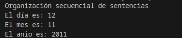
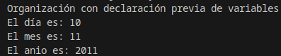
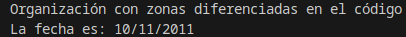
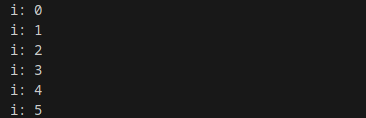
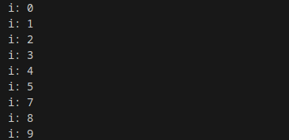
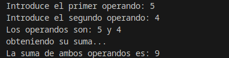
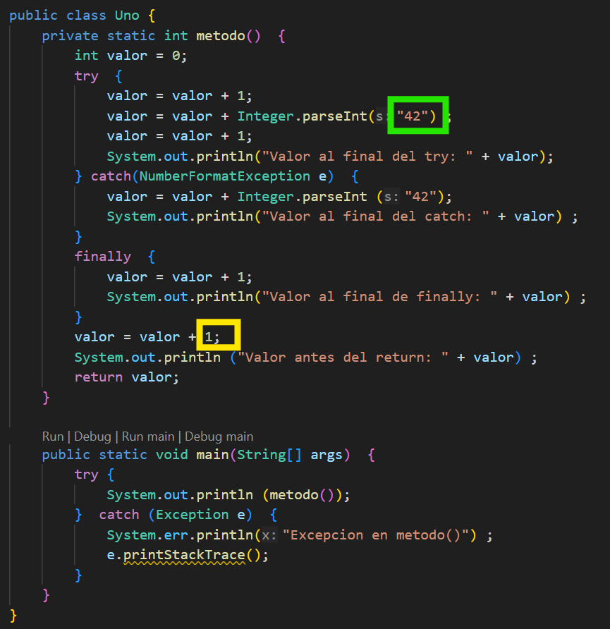

☕ UT2 — Estructuras de Control y Excepciones
📌 Informació Curricular de la Unitat (UT2)
Resultat d'Aprenentatge: RA3. Escribe y depura código, analizando y utilizando las estructuras de control del lenguaje.
Índex ràpid d'apartats en aquesta pàgina:
- 2.0 RA y Criterios de Evaluación — (Obrir apartat individual)
- 2.1 Introducción a las estructuras de control — (Obrir apartat individual)
- 2.2 Sentencias y bloques — (Obrir apartat individual)
- 2.3 Estructuras de selección (if-else, switch) — (Obrir apartat individual)
- 2.4 Estructuras de repetición (while, do-while, for) — (Obrir apartat individual)
- 2.5 Sentencias de salto (break, continue, return) — (Obrir apartat individual)
- 2.6 Control y manejo de excepciones (try-catch) — (Obrir apartat individual)
- Ejemplos guiados UT2 — (Obrir apartat individual)
- Actividades prácticas UT2 — (Obrir apartat individual)
- Retos de programación UT2 — (Obrir apartat individual)
- Trazas de ejecución UT2 — (Obrir apartat individual)
- Proyecto Intermodular UT2 — (Obrir apartat individual)
RA 3 - Escribe y depura código, analizando y utilizando las estructuras de control del lenguaje.
| Criterio de Evaluación | Apartado | Bloque de actividades |
|---|---|---|
| a) Se ha escrito y probado código que haga uso de estructuras de selección. | 2.3 Estructuras de selección | Bloque 2.0 Bloque 2.2 |
| b) Se han utilizado estructuras de repetición. | 2.4 Estructuras de repetición | Bloque 2.1 Bloque 2.2 |
| c) Se han reconocido las posibilidades de las sentencias de salto. | 2.5 Sentencias de salto | Bloque 2.3 |
| d) Se ha escrito código utilizando control de excepciones. | 2.6 Control de excepciones | Bloque 2.4 |
| e) Se han creado programas ejecutables utilizando diferentes estructuras de control. | A lo largo de los apartados anteriores | Bloque 2.5 |
| f) Se han probado y depurado los programas. | A lo largo de toda la UT | Todos los bloques |
| g) Se ha comentado y documentado el código. | A lo largo de toda la UT | Todos los bloques |
| h) Se han creado excepciones. | 2.6 Control de excepciones | Bloque de actividades 2.4 |
| i) Se han utilizado aserciones para la detección y corrección de errores durante la fase de desarrollo. | A lo largo de toda la UT | Todos los bloques |
2.1 Introducción
En unidades anteriores has podido aprender cuestiones básicas sobre el lenguaje JAVA: definición de variables, tipos de datos, asignación de valores, uso de literales, diferentes operadores que se pueden aplicar, conversiones de tipos, inserción de comentarios, etc.
Vale, parece ser que tenemos los elementos suficientes para comenzar a generar programas escritos en JAVA, ¿Seguro?
Si has programado alguna vez o tienes ciertos conocimientos básicos sobre lenguajes de programación, sabes que la gran mayoría de lenguajes poseen estructuras que permiten a los programadores controlar el flujo de la información de sus programas. Esto realmente es una ventaja para la persona que está aprendiendo un nuevo lenguaje, o tiene previsto aprender más de uno, ya que estas estructuras suelen ser comunes a todos (con algunos cambios de sintaxis o conjunto de reglas que definen las secuencias correctas de los elementos de un lenguaje de programación.). Es decir, si conocías sentencias de control de flujo en otros lenguajes, lo que vamos a ver a lo largo de esta unidad te va a sonar bastante.
Para alguien que no ha programado nunca, un ejemplo sencillo le va a permitir entender qué es eso de las sentencias de control de flujo. Piensa en un fontanero (programador), principalmente trabaja con agua (datos) y se encarga de hacer que ésta fluya por donde él quiere (programa) a través de un conjunto de tuberías, codos, latiguillos, llaves de paso, etc. (sentencias de control de flujo).
Pues esas estructuras de control de flujo son las que estudiaremos, conoceremos su estructura, funcionamiento, cómo utilizarlas y dónde. A través de ellas, al construir nuestros programas podremos hacer que los datos (agua) fluyan por los caminos adecuados para representar la realidad del problema y obtener un resultado adecuado.
Los tipos de estructuras de programación que se emplean para el control del flujo de los datos son los siguientes:
- Secuencia: compuestas por 0, 1 o N sentencias que se ejecutan en el orden en que han sido escritas. Es la estructura más sencilla y sobre la que se construirán el resto de estructuras.
- Selección: es un tipo de sentencia especial de decisión y de un conjunto de secuencias de instrucciones asociadas a ella. Según la evaluación de la sentencia de decisión se generará un resultado (que suele ser verdadero o falso) y en función de éste, se ejecutarán una secuencia de instrucciones u otra. Las estructuras de selección podrán ser simples, compuestas y múltiples.
- Iteración: es un tipo de sentencia especial de decisión y una secuencia de instrucciones que pueden ser repetidas según el resultado de la evaluación de la sentencia de decisión. Es decir, la secuencia de instrucciones se ejecutará repetidamente si la sentencia de decisión arroja un valor correcto, en otro la estructura de repetición se detendrá.
Además de las sentencias típicas de control de flujo, en esta unidad haremos una revisión de las sentencias de salto, que aunque no son demasiado recomendables, es necesario conocerlas. Como nuestros programas podrán generar errores y situaciones especiales, echaremos un vistazo al manejo de excepciones en JAVA. Posteriormente, analizaremos la mejor manera de llevar a cabo las pruebas de nuestros programas y la depuración de los mismos. Y finalmente, aprenderemos a valorar y utilizar las herramientas de documentación de programas.
Un poquito de ...
2.2 Sentencias y bloques
Este epígrafe lo utilizaremos para reafirmar cuestiones que son obvias y que en el transcurso de anteriores unidades se han dado por sabidas. Aunque, a veces, es conveniente recordar. Lo haremos como un conjunto de FAQs:
-
¿Cómo se escribe un programa sencillo? Si queremos que un programa sencillo realice instrucciones o sentencias para obtener un determinado resultado, es necesario colocar éstas una detrás de la otra, exactamente en el orden en que deben ejecutarse.
-
¿Podrían colocarse todas las sentencias una detrás de otra, separadas por puntos y comas en una misma línea? Claro que sí, pero no es muy recomendable. Cada sentencia debe estar escrita en una línea, de esta manera tu código será mucho más legible y la localización de errores en tus programas será más sencilla y rápida. De hecho, cuando se utilizan herramientas de programación, los errores suelen asociarse a un número o números de línea.
-
¿Puede una misma sentencia ocupar varias líneas en el programa? Sí. Existen sentencias que, por su tamaño, pueden generar varias líneas. Pero siempre finalizarán con un punto y coma.
-
¿En Java todas las sentencias se terminan con punto y coma? Sí. Si detrás de una sentencia ha de venir otra, pondremos un punto y coma. Escribiendo la siguiente sentencia en una nueva línea. Pero en algunas ocasiones, sobre todo cuando utilizamos estructuras de control de flujo, detrás de la cabecera de una estructura de este tipo no debe colocarse punto y coma. No te preocupes, lo entenderás cuando analicemos cada una de ellas.
-
¿Qué es la sentencia nula en Java? La sentencia nula es una línea que no contiene ninguna instrucción y en la que sólo existe un punto y coma. Como su nombre indica, esta sentencia no hace nada.
-
¿Qué es un bloque de sentencias? Es un conjunto de sentencias que se encierra entre llaves y que se ejecutaría como si fuera una única orden. Sirve para agrupar sentencias y para clarificar el código. Los bloques de sentencias son utilizados en Java en la práctica totalidad de estructuras de control de flujo, clases, métodos, etc. La siguiente tabla muestra dos formas de construir un bloque de sentencias.
| Bloque de sentencias 1 | Bloque de sentencias 2 |
|---|---|
{sentencia1; sentencia2; ...; sentenciaN;} |
{sentencia1;sentencia2;...;sentenciaN;} |
- ¿En un bloque de sentencias, éstas deben estar colocadas con un orden exacto? En ciertos casos sí, aunque si al final de su ejecución se obtiene el mismo resultado, podrían ocupar diferentes posiciones en nuestro programa.
Debes conocer
Observa los tres archivos que te ofrecemos a continuación y compara su código fuente. Verás que los tres obtienen el mismo resultado, pero la organización de las sentencias que los componen es diferente entre ellos.
Ejemplo 1
En este primer archivo, las sentencias están colocadas en orden secuencial.
package organizacion_sentencias1;
/*
* Organización de sentencias secuencial
*/
public class Organizacion_sentencias_1 {
public static void main(String[] args) {
System.out.println ("Organización secuencial de sentencias");
int dia=12;
System.out.println ("El día es: " + dia);
int mes=11;
System.out.println ("El mes es: " + mes);
int anio=2011;
System.out.println ("El anio es: " + anio);
}
}
Ejemplo 2
En este segundo archivo, se declaran al principio las variables necesarias. En Java no es imprescindible hacerlo así, pero sí que antes de utilizar cualquier variable ésta debe estar previamente declarada. Aunque la declaración de dicha variable puede hacerse en cualquier lugar de nuestro programa.
package organizacion_sentencias2;
/*
* Organización de sentencias con declaración previa de variables
*/
public class Organizacion_sentencias_2 {
public static void main(String[] args) {
// Zona de declaración de variables
int dia=10;
int mes=11;
int anio=2011;
System.out.println ("Organización con declaración previa de variables");
System.out.println ("El día es: " + dia);
System.out.println ("El mes es: " + mes);
System.out.println ("El anio es: " + anio);
}
}
Ejemplo 3
En este tercer archivo, podrás apreciar que se ha organizado el código en las siguientes partes: declaración de variables, petición de datos de entrada, procesamiento de dichos datos y obtención de la salida. Este tipo de organización está más estandarizada y hace que nuestros programas ganen en legibilidad.
package organizacion_sentencias3;
/*
* Organización de sentencias en zonas diferenciadas
* según las operaciones que se realicen en el código
*/
public class Organizacion_sentencias_3 {
public static void main(String[] args) {
// Zona de declaración de variables
int dia;
int mes;
int anio;
String fecha;
//Zona de inicialización o entrada de datos
dia=10;
mes=11;
anio=2011;
fecha="";
//Zona de procesamiento
fecha=dia+"/"+mes+"/"+anio;
//Zona de salida
System.out.println ("Organización con zonas diferenciadas en el código");
System.out.println ("La fecha es: " + fecha);
}
}
2.3 Estructuras de selección
¿Cómo conseguimos que nuestros programas puedan tomar decisiones? Para comenzar, lo haremos a través de las estructuras de selección. Estas estructuras constan de una sentencia especial de decisión y de un conjunto de secuencias de instrucciones.
El funcionamiento es sencillo, la sentencia de decisión será evaluada y ésta devolverá un valor (verdadero o falso), en función del valor devuelto se ejecutará una secuencia de instrucciones u otra.
Ejemplo
Por ejemplo, si el valor de una variable es mayor o igual que 5 se imprime por pantalla la palabra APROBADO y si es menor, se imprime SUSPENSO. Para este ejemplo, la comprobación del valor de la variable será la sentencia especial de decisión. La impresión de la palabra APROBADO será una secuencia de instrucciones y la impresión de la palabra SUSPENSO será otra. Cada secuencia estará asociada a cada uno de los resultados que puede arrojar la evaluación de la sentencia especial de decisión.
Las estructuras de selección se dividen en:
-
Estructuras de selección simples o estructura if.
-
Estructuras de selección compuesta o estructura ifelse.
-
Estructuras de selección basadas en el operador condicional.
-
Estructuras de selección múltiples o estructura switch.
A continuación, detallaremos las características y funcionamiento de cada una de ellas. Es importante que a través de los ejemplos que vamos a ver, puedas determinar en qué circunstancias utilizar cada una de estas estructuras. Aunque un mismo problema puede ser resuelto con diferentes estructuras e incluso, con diferentes combinaciones de éstas.
1. Estructura if, if else, if else if
La estructura if es una estructura de selección o estructura condicional, en la que se evalúa una expresión lógica o sentencia de decisión y en función del resultado, se ejecuta una sentencia o un bloque de éstas.
La estructura if puede presentarse de las siguientes formas:
1.1 Estructura if simple
if (expresión-lógica)
sentencia1;if (expresión-lógica)
{
sentencia1;
sentencia2;
...;
sentenciaN;
}Si la evaluación de la expresión‐lógica ofrece un resultado verdadero, se ejecuta la sentencia1 o bien el bloque de sentencias asociado. Si el resultado de dicha evaluación es falso, no se ejecutará ninguna instrucción asociada a la estructura condicional.
Ejemplo if
int edad = 22;
if (edad > 18) {
System.out.printf("%d es mayor que 18\n", edad);
}
1.2 Estructura if de doble alternativa
if (expresión-lógica)
sentencia1;
else
sentencia2;if (expresión-lógica){
sentencia1;
...;
sentenciaN;
} else {
sentencia1;
...;
sentenciaN;
}Si la evaluación de la expresión‐lógica ofrece un resultado verdadero, se ejecutará la primera sentencia o el primer bloque de sentencias. Si, por el contrario, la evaluación de la expresión‐lógica ofrece un resultado falso, no se ejecutará la primera sentencia o el primer bloque y sí se ejecutará la segunda sentencia o el segundo bloque.
Funcionamiento de un if
Haciendo una interpretación cercana al pseudocódigo tendríamos que si se cumple la condición (expresión lógica), se ejecutará un conjunto de instrucciones y si no se cumple, se ejecutará otro conjunto de instrucciones.
Ejemplo if-else
int temperatura = 22;
if (temperatura > 25) {
System.out.println("Debemos abrigarnos!");
} else {
System.out.println("Voy a ponerme pantalón corto.");
}
Hay que tener en cuenta que la cláusula else de la sentencia if no es obligatoria. En algunos casos no necesitaremos utilizarla, pero sí se recomienda cuando es necesario llevar a cabo alguna acción en el caso de que la expresión lógica no se cumpla.
En aquellos casos en los que no existe cláusula else, si la expresión lógica es falsa, simplemente se continuarán ejecutando las siguientes sentencias que aparezcan bajo la estructura condicional if.
Los condicionales if e if-else pueden anidarse, de tal forma que dentro de un bloque de sentencias puede incluirse otro if o if-else. El nivel de anidamiento queda a criterio del programador, pero si éste es demasiado profundo podría provocar problemas de eficiencia y legibilidad en el código. En otras ocasiones, un nivel de anidamiento excesivo puede denotar la necesidad de utilización de otras estructuras de selección más adecuadas.
Cuando se utiliza anidamiento de este tipo de estructuras, es necesario poner especial atención en saber a qué if está asociada una cláusula else. Normalmente, un else estará asociado con el if inmediatamente superior o más cercano que exista dentro del mismo bloque y que no se encuentre ya asociado a otro else.
Estructura if else if.
Esta estructura es una alternativa a la anidación de sentencias if else funciona de modo que si se cumple una condición ejecuta unas sentencias y el caso contrario comprueba otra condición ejecutando unas sentencias si se cumple y así sucesivamente. Veamos un ejemplo con if anidados:
if (condicion1) {
sentencias1;
} else {
if (condicion2) {
sentencias2;
} else {
if (condicion3) {
sentencias3;
} else {
sentencias4;
}
}
}El mismo ejemplo usando if else if quedaría de este modo:
if (condicion1) {
sentencias1;
} else if (condicion2) {
sentencias2;
} else if (condicion3) {
sentencias3;
} else {
sentencias4;
}Ejemplo if-else-if
int temperatura = 3;
boolean nevando = true;
if (temperatura > 25) {
// Si la temperatura es mayor que 25 ...
System.out.println("A la playa!!!");
} else if (temperatura > 15) {
// si es mayor que 15 y no es mayor que 25 ..
System.out.println("A la montaña!!!");
} else if (temperatura < 5 && nevando) {
// si es menor que 5 y esta nevando y no es mayor que 15 ni mayor que 25
System.out.println("A esquiar!!!");
} else {
// si la tempera no es mayor que 25 ni que 15 ni menor que 5 si esta nevando
System.out.println("A descansar... zZz");
}
Ejemplo completo if e if-else
Para completar la información que debes saber sobre las estructuras if e if‐else, observa el siguiente código. En él podrás analizar el programa que realiza el cálculo de la nota de un examen de tipo test. Además de calcular el valor de la nota, se ofrece como salida la calificación no numérica de dicho examen. Para obtenerla, se combinarán las diferentes estructuras condicionales aprendidas hasta ahora.
Presta especial atención a los comentarios incorporados en el código fuente, así como a la forma de combinar las estructuras condicionales y a las expresiones lógicas utilizadas en ellas.
public class Sentencias_Condicionales {
/* Realizar el cálculo de la nota de un examen de tipo test.
* Para ello, tendremos en cuenta el númerototal de pregunta,
* los aciertos y los errores. Dos errores anulan una respuesta correcta.
* Finalmente, se muestra por pantalla la nota obtenida, así
* como su calificación no numérica.
*
* La obtención de la calificación no numérica se ha realizado
* combinando varias estructuras condicionales, mostrando expresiones
* lógicas compuestas, así como anidamiento.
*/
public static void main(String[] args) {
// Declaración e inicialización de variables
int num_aciertos = 12;
int num_errores = 3;
int num_preguntas = 20;
float nota = 0;
String calificacion = "";
//Procesamiento de datos
nota = ((num_aciertos - (num_errores / 2)) * 10) / num_preguntas;
if (nota < 5) {
calificacion = "INSUFICIENTE";
} else {
/* Cada expresión lógica de estos if está compuesta por dos
* expresiones lógicas combinadas a través del operador Y o AND
* que se representa con el símbolo &&. De tal manera, que para
* que la expresión lógica se cumpla (sea verdadera) la variable
* nota debe satisfacer ambas condiciones simultáneamente
*/
if (nota >= 5 && nota < 6) {
calificacion = "SUFICIENTE";
}
if (nota >= 6 && nota < 7) {
calificacion = "BIEN";
}
if (nota >= 7 && nota < 9) {
calificacion = "NOTABLE";
}
if (nota >= 9 && nota <= 10) {
calificacion = "SOBRESALIENTE";
}
}
//Salida de información
System.out.println("La nota obtenida es: " + nota);
System.out.println("y la calificación obtenida es: " + calificacion);
}
}
2. Operador ternario (?:)
El operador condicional (? :) evalúa una condición booleana y devuelve un valor si se cumple (true) u otro si no se cumple (false), todo en una única expresión:
resultado = (condicion) ? valorSiVerdadero : valorSiFalso;Condiciones:
-
La condición debe ser una expresión booleana, es decir, que se evalúe como
trueofalse. -
Si la condición se cumple (true), el operador devuelve el valor indicado después del signo de interrogación
?. -
Si la condición no se cumple (false), devuelve el valor indicado después de los dos puntos
:. -
El operador condicional puede utilizarse tanto para asignar valores a variables como dentro de expresiones más complejas.
-
Los valores devueltos en ambas ramas (verdadero y falso) deben ser del mismo tipo o de tipos compatibles.
Ejemplo operador condicional (?:)
int numero = 8;
String resultado = (numero % 2 == 0) ? "par" : "impar";
System.out.println("El número es " + resultado);2.1 Ternarios anidados e indentación (Clean Code)
Cuando necesitamos elegir entre tres o más opciones, podemos encadenar otro operador ternario después de los dos puntos (:).
Para que el código sea legible y fácil de mantener, nunca lo escribas en una sola línea larga; indéntalo en varias líneas alineando los signos ? y : como una escalera de decisión:
Ejemplo: Indentación de ternarios anidados
int numero = 0;
// ❌ Mal: difícil de leer en una sola línea
// String signo = (numero > 0) ? "Positivo" : (numero < 0) ? "Negativo" : "Cero";
// ✅ Bien: indentado por niveles de decisión
String signo = (numero > 0) ? "Positivo"
: (numero < 0) ? "Negativo"
: "Cero";
System.out.println("El número es: " + signo);Actividad ClasificadorNotas
Escribe un programa en Java llamado ClasificadorNotas.java que pida al usuario una nota entera entre 0 y 10 por teclado (Scanner) y, utilizando únicamente el operador ternario (? :) (sin usar sentencias if), muestre por pantalla:
- Ternario simple: Una variable
estadoque almacene"Aprobado"si la nota es mayor o igual a 5, o"Suspendido"en caso contrario. - Ternario anidado (indentado en varias líneas): Una variable
calificacionque almacene: "Insuficiente"si la nota es menor que 5."Suficiente"si es menor que 6."Bien"si es menor que 7."Notable"si es menor que 9."Sobresaliente"en caso contrario.
Introduce tu nota (0-10): 7
Estado: Aprobado
Calificación: NotableSi en el primer nivel ya has comprobado nota < 5, en el siguiente escalón (:) ya sabes que la nota es como mínimo 5, por lo que basta con evaluar nota < 6.
Revisa que los nombres de clase y variables cumplan las convenciones de Java (UpperCamelCase y lowerCamelCase), comprueba la indentación en VSCode y sube el archivo ClasificadorNotas.java a la tarea correspondiente en Aules.
3. Estructura switch
¿Qué podemos hacer cuando nuestro programa debe elegir entre más de dos alternativas? Una posible solución podría ser emplear estructuras if anidadas, aunque no siempre esta solución es la más eficiente. Cuando estamos ante estas situaciones podemos utilizar la estructura de selección múltiple switch. En la siguiente tabla se muestra tanto la sintaxis, como el funcionamiento de esta estructura.
Sintaxis:
switch (expresion) {
case valor1:
sentencia1_1;
sentencia1_2;
....
break;
case valor2:
....
case valorN:
sentenciaN_1;
sentenciaN_2;
....
break;
default:
sentencias-default;
}Condiciones:
- Donde expresión debe ser del tipo
char,byte,shortoint, y las constantes de cadacasedeben ser de este tipo o de un tipo compatible. - La
expresiondebe ir entre paréntesis. - Cada
casellevará asociado unvalory se finalizará con dos puntos (:). - El bloque de sentencias asociado a la cláusula
defaultpuede finalizar con una sentencia de rupturabreako no.
Funcionamiento:
- Las diferentes alternativas de esta estructura estarán precedidas de la cláusula case que se ejecutará cuando el valor asociado al case coincida con el valor obtenido al evaluar la expresión del switch.
- En las cláusulas case, no pueden indicarse expresiones condicionales, rangos de valores o listas de valores (otros lenguajes de programación sí lo permiten). Habrá que asociar una cláusula case a cada uno de los valores que deban ser tenidos en cuenta.
- La cláusula default será utilizada para indicar un caso por defecto, las sentencias asociadas a la cláusula default se ejecutarán si ninguno de los valores indicados en las cláusulas case coincide con el resultado de la evaluación de la expresión de la estructura switch.
- La cláusula default puede no existir, y por tanto, si ningún case ha sido activado finalizaría el switch.
- Cada cláusula case puede llevar asociadas una o varias sentencias, sin necesidad de delimitar dichos bloques por medio de llaves.
- En el momento en el que el resultado de la evaluación de la expresión coincide con alguno de los valores asociados a las cláusulas case, se ejecutarán todas las instrucciones asociadas hasta la aparición de una sentencia break de ruptura (la sentencia break se analizará en epígrafes posteriores).
3.1. Expresiones switch mejoradas
En las novedades de Java 12 se añadió la posibilidad de los switch fueran expresiones que retornan un valor en vez de sentencias y se evita el uso de la palabra reservada break.
Ejemplo switch mejorada
int entero = 5;
String numericString = switch (entero) {
case 0 -> "cero";
case 1, 3, 5, 7, 9 -> "impar";
case 2, 4, 6, 8, 10 -> "par";
default -> "error";
};
System.out.println(numericString); //impar
En Java 13 en vez de únicamente el valor a retornar se permite crear bloques de sentencias para cada rama case y retornar el valor con la palabra reservada yield. En los bloques de sentencias puede haber algún cálculo más complejo que directamente retornar el valor deseado.
Ejemplo switch con yield
int entero2 = 4;
String numericString2 = switch (entero2) {
case 0 -> {
String value = calculaCero();
yield value;
}
case 1, 3, 5, 7, 9 -> {
String value = calculaImpar();
yield value;
}
case 2, 4, 6, 8, 10 -> {
String value = calculaPar();
yield value;
}
default -> {
String value = calculaDefecto();
yield value;
}
};
System.out.println(numericString); //calculaPar()En resumen, se ha de comparar el valor de una expresión con un conjunto de constantes, si el valor de la expresión coincide con algún valor de dichas constantes, se ejecutarán los bloques de instrucciones asociados a cada una de ellas. Si no existiese coincidencia, se ejecutarían una serie de instrucciones por defecto.
Ejemplo completo switch
Comprueba el siguiente fragmento de código en el que se resuelve el cálculo de un examen de tipo test, utilizando la estructura switch.
public class P3_2_condicional_switch {
/*
* Realizar el cálculo de la nota de un examen de tipo test.
* Para ello, tendremos en cuenta el número total de preguntas, los aciertos y
* los errores. Dos errores anulan una respuesta correcta.
*
* La nota que vamos a obtener será un número entero.
*
* Finalmente, se muestra por pantalla la nota obtenida, así como su
* calificación no numérica.
*
* La obtención de la calificación no numérica se ha realizado utilizando la
* estructura condicional múltiple o switch.
*
*/
public static void main(String[] args) {
// Declaración e inicialización de variables
int num_aciertos = 17;
int num_errores = 3;
int num_preguntas = 20;
int nota = 0;
String calificacion = "";
//Procesamiento de datos
nota = ((num_aciertos - (num_errores / 2)) * 10) / num_preguntas;
switch (nota) {
case 5:
calificacion = "SUFICIENTE";
break;
case 6:
calificacion = "BIEN";
break;
case 7:
calificacion = "NOTABLE";
break;
case 8:
calificacion = "NOTABLE";
break;
case 9:
calificacion = "SOBRESALIENTE";
break;
case 10:
calificacion = "SOBRESALIENTE";
break;
default:
calificacion = "INSUFICIENTE";
}
//Salida de información
System.out.println("La nota obtenida es: " + nota);
System.out.println("y la calificación obtenida es: " + calificacion);
//Expresiones switch mejoradas JAVA 12
int entero = 5;
String numericString = switch (entero) {
case 0 -> "cero";
case 1, 3, 5, 7, 9 -> "impar";
case 2, 4, 6, 8, 10 -> "par";
default -> "error";
};
System.out.println(numericString); //impar
//Expresiones switch mejoradas JAVA 13
int entero2 = 4;
String numericString2 = switch (entero2) {
case 0 -> {
String value = calculaCero();
yield value;
}
case 1, 3, 5, 7, 9 -> {
String value = calculaImpar();
yield value;
}
case 2, 4, 6, 8, 10 -> {
String value = calculaPar();
yield value;
}
default -> {
String value = calculaDefecto();
yield value;
}
};
System.out.println(numericString); //calculaPar()
}
static String calculaCero() {return "";};
static String calculaImpar() {return "";};
static String calculaPar() {return "";};
static String calculaDefecto() {return "";};
}
2.4 Estructuras de repetición
Nuestros programas ya son capaces de controlar su ejecución teniendo en cuenta determinadas condiciones, pero aún hemos de aprender un conjunto de estructuras que nos permita repetir una secuencia de instrucciones determinada. La función de estas estructuras es repetir la ejecución de una serie de instrucciones teniendo en cuenta una condición. A este tipo de estructuras se las denomina estructuras de repetición, estructuras repetitivas, bucles o estructuras iterativas. En Java existen cuatro clases de bucles:
- Bucle
for(repite para). - Bucle
for/in(repite para cada). - Bucle
while(repite mientras). - Bucle
do while(repite hasta).
Los bucles for y for/in se consideran bucles controlados por contador. Por el contrario, los bucles while y do...while se consideran bucles controlados por sucesos.
La utilización de unos bucles u otros para solucionar un problema dependerá en gran medida de las siguientes preguntas:
- ¿Sabemos a priori cuántas veces necesitamos repetir un conjunto de instrucciones?
- ¿Sabemos si hemos de repetir un conjunto de instrucciones si una condición satisface un conjunto de valores?
- ¿Sabemos hasta cuándo debemos estar repitiendo un conjunto de instrucciones?
- ¿Sabemos si hemos de estar repitiendo un conjunto de instrucciones mientras se cumpla una condición?
Estas y otras preguntas tendrán su respuesta en cuanto analicemos cada una de estructuras repetitivas en detalle.
Equivalencia entre estructuras repetitivas
Estudia cada tipo de estructura repetitiva, conoce su funcionamiento y podrás llegar a la conclusión de que algunos de estos bucles son equivalentes entre sí. Un mismo problema, podrá ser resuelto empleando diferentes tipos de bucles y obtener los mismos resultados.
1. Estructura for
Hemos indicado anteriormente que el bucle for es un bucle controlado por contador. Este tipo de bucle tiene las siguientes características:
- Se ejecuta un número determinado de veces.
- Utiliza una variable contadora que controla las iteraciones del bucle.
En general, existen tres operaciones que se llevan a cabo en este tipo de bucles:
- Se inicializa la variable contadora.
- Se evalúa el valor de la variable contador, por medio de una comparación de su valor con el número de iteraciones especificado.
- Se modifica o actualiza el valor del contador a través de incrementos o decrementos de éste, en cada una de las iteraciones.
Consideraciones
- La inicialización de la variable contadora debe realizase correctamente para garantizar que el bucle lleve a cabo, al menos, la primera repetición de su código interno.
- La condición de terminación del bucle debe variar en el interior del mismo; de no ser así, podemos caer en la creación de un bucle infinito. Cuestión que se debe evitar por todos los medios.
- Es necesario estudiar el número de veces que se repite el bucle, pues debe ajustarse al número de veces estipulado.
Sintaxis estructura for con una única sentencia:
for (inicialización; condición; iteración)
sentencia;Sintaxis estructura for con un bloque de sentencias:
for (inicialización; condición; iteración) {
sentencia1;
sentencia2;
...
sentenciaN;
}donde:
inicializaciónes una expresión en la que se inicializa una variable de control, que será la encargada de controlar el final del bucle.condiciónes una expresión que evaluará la variable de control. Mientras la condición sea falsa, el cuerpo del bucle estará repitiéndose. Cuando la condición se cumpla, terminará la ejecución del bucle.iteraciónindica la manera en la que la variable de control va cambiando en cada iteración del bucle. Podrá ser mediante incremento o decremento, y no solo de uno en uno.

Ejemplo for
for(int i=1;i<=1000;i++)
System.out.printf(i + ") No comeré, beberé y escribiré mensajes por móvil en clase.");
Ejemplo repetición for para realizar la tabla de multiplicar
Observa el siguiente archivo Java y podrás analizar un ejemplo de utilización del bucle for para la impresión por pantalla de la tabla de multiplicar del siete. Lee atentamente los comentarios incluidos en el código, pues aclaran algunas cuestiones interesantes sobre este bucle.
public class Repetitiva_For {
/*
* En este ejemplo se utiliza la estructura repetitiva for
* para representar en pantalla la tabla de multiplicar del siete
*/
public static void main(String[] args) {
// Declaración e inicialización de variables
int numero = 7;
int contador;
int resultado = 0;
//Salida de información
System.out.println("Tabla de multiplicar del " + numero);
System.out.println(".............................. ");
//Utilizamos ahora el bucle for
for (contador = 1; contador <= 10; contador++) {
/* La cabecera del bucle incorpora la inicialización de la variable
* de control, la condición de multiplicación hasta el 10 y el
* incremento de dicha variable de uno en uno en cada iteración del
* bucle.
* En este caso contador++ incrementará en una unidad el valor de
* dicha variable.
*/
resultado = contador * numero;
System.out.println(numero + " x " + contador + " = " + resultado);
/* A través del operador + aplicado a cadenas de caracteres,
* concatenamos los valores de las variables con las cadenas de
* caracteres que necesitamos para representar correctamente la
* salida de cada multiplicación.
*/
}
}
}
2. Estructura for/in
Junto a la estructura for, for/in también se considera un bucle controlado por contador. Este bucle es una mejora incorporada en la versión 5.0. de Java.
Este tipo de bucles permite realizar recorridos sobre arrays y colecciones de objetos. Los arrays son colecciones de variables que tienen el mismo tipo y se referencian por un nombre común. Así mismo, las colecciones de objetos son objetos que se dice son iterables, o que se puede iterar sobre ellos.
Este bucle es nombrado también como bucle for mejorado, o bucle foreach. En otros lenguajes de programación existen bucles muy parecidos a este.
La sintaxis es la siguiente:
for (declaración: expresión) {
sentencia1;
...
sentenciaN;
}Donde...:
expresiones un array o una colección de objetos.declaraciónes la declaración de una variable cuyo tipo sea compatible con expresión. Normalmente, será el tipo y el nombre de la variable a declarar.
Ejemplo foreach
for (int i : Arrays.asList(0, 1, 2, 3, 4)) {
System.out.println(i);
}
El funcionamiento consiste en que para cada elemento de la expresión, guarda el elemento en la variable declarada y haz las instrucciones contenidas en el bucle. Después, en cada una de las iteraciones del bucle tendremos en la variable declarada el elemento actual de la expresión. Por tanto, para el caso de los arrays y de las colecciones de objetos, se recorrerá desde el primer elemento que los forma hasta el último.
Observa el contenido del código representado en la siguiente imagen, puedes apreciar cómo se construye un bucle de este tipo y su utilización sobre un array.
Los bucles for/in permitirán al programador despreocuparse del número de veces que se ha de iterar, pero no sabremos en qué iteración nos encontramos salvo que se añada artificialmente alguna variable contadora que nos pueda ofrecer esta información.
Uso de la sentencia foreach
Esta estructura tomará sentido cuando avancemos en el curso y veamos los Arrays y las colecciones de Objetos.
3. Estructura while
El bucle while es la primera de las estructuras de repetición controladas por sucesos que vamos a estudiar. La utilización de este bucle responde al planteamiento de la siguiente pregunta: ¿Qué podemos hacer si lo único que sabemos es que se han de repetir un conjunto de instrucciones mientras se cumpla una determinada condición?.
La característica fundamental de este tipo de estructura repetitiva estriba en ser útil en aquellos casos en los que las instrucciones que forman el cuerpo del bucle podría ser necesario ejecutarlas o no. Es decir, en el bucle while siempre se evaluará la condición que lo controla, y si dicha condición es cierta, el cuerpo del bucle se ejecutará una vez, y se seguirá ejecutando mientras la condición sea cierta. Pero si en la evaluación inicial de la condición ésta no es verdadera, el cuerpo del bucle no se ejecutará.
Es imprescindible que en el interior del bucle while se realice alguna acción que modifique la condición que controla la ejecución del mismo, en caso contrario estaríamos ante un bucle infinito.
Sintaxis estructura while con una única sentencia:
while (condición)
sentencia;Sintaxis estructura while con un bloque de sentencias:
while (condición) {
sentencia1;
...
sentenciaN;
}Funcionamiento: Mientras la condición sea cierta, el bucle se repetirá, ejecutando la/s instrucción/es de su interior.
En el momento en el que la condición no se cumpla, el control del flujo del programa pasará a la siguiente instrucción que exista justo detrás del bucle while.
La condición se evaluará siempre al principio, y podrá darse el caso de que las instrucciones contenidas en él no lleguen a ejecutarse nunca si no se satisface la condición de partida.
Ejemplo while
Scanner sc = new Scanner(System.in);
System.out.print("Ingresa un número: ");
int numero = sc.nextInt();
while(numero <= 500) {
System.out.print("Ingresa otro número: ");
numero = sc.nextInt();
}
System.out.println("Fin del bucle");
Ejemplo repetición while para realizar la tabla de multiplicar
public class Repetitiva_While {
public static void main(String[] args) {
// Declaración e inicialización de variables
int numero = 7;
int contador;
int resultado = 0;
//Salida de información
System.out.println("Tabla de multiplicar del " + numero);
System.out.println(".............................. ");
//Utilizamos ahora el bucle while
contador = 1; //inicializamos la variable contadora
while (contador <= 10) //Establecemos la condición del bucle
{
resultado = contador * numero;
System.out.println(numero + " x " + contador + " = " + resultado);
//Modificamos el valor de la variable contadora, para hacer que el
//bucle pueda seguir iterando hasta llegar a finalizar
contador++;
}
}
}
4. Estructura do-while
La segunda de las estructuras repetitivas controladas por sucesos es do-while. En este caso, la pregunta que nos planteamos es la siguiente: ¿Qué podemos hacer si lo único que sabemos es que se han de ejecutar, al menos una vez, un conjunto de instrucciones y seguir repitiéndose hasta que se cumpla una determinada condición?.
La característica fundamental de este tipo de estructura repetitiva estriba en ser útil en aquellos casos en los que las instrucciones que forman el cuerpo del bucle necesitan ser ejecutadas, al menos, una vez y repetir su ejecución hasta que la condición sea verdadera. Por tanto, en esta estructura repetitiva siempre se ejecuta el cuerpo del bucle una primera vez.
Es imprescindible que en el interior del bucle se realice alguna acción que modifique la condición que controla la ejecución del mismo, en caso contrario estaríamos ante un bucle infinito.
Sintaxis estructura while con una única sentencia:
do
sentencia;
while (condición);Sintaxis estructura while con un bloque de sentencias:
do {
sentencia1;
...
sentenciaN;
} while (condición);Funcionamiento:
El cuerpo del bucle se ejecuta la primera vez, a continuación se evaluará la condición y, si ésta es falsa, el cuerpo el bucle volverá a repetirse. El bucle finalizará cuando la evaluación de la condición sea verdadera.
En ese momento el control del flujo del programa pasará a la siguiente instrucción que exista justo detrás del bucle do‐while. La condición se evaluará siempre después de una primera ejecución del cuerpo del bucle, por lo que no se dará el caso de que las instrucciones contenidas en él no lleguen a ejecutarse nunca.

Ejemplo do-while
public class Repetitiva_While {
public static void main(String[] args) {
Scanner sc = new Scanner(System.in);
int numero;
do {
System.out.print("Ingresa un numero: ");
numero = sc.nextInt();
}
while(numero <= 500);
System.out.println("Fin del bucle");
}
}
Ejemplo repetición do-while para realizar la tabla de multiplicar
public class Repetitiva_DoWhile {
public static void main(String[] args) {
// Declaración e inicialización de variables
int numero = 7;
int contador;
int resultado = 0;
//Salida de información
System.out.println("Tabla de multiplicar del " + numero);
System.out.println(".............................. ");
//Utilizamos ahora el bucle do-while
contador = 1; //inicializamos la variable contadora
do {
resultado = contador * numero;
System.out.println(numero + " x " + contador + " = " + resultado);
//Modificamos el valor de la variable contadora, para hacer que el
//bucle pueda seguir iterando hasta llegar a finalizar
contador++;
} while (contador <= 10); //Establecemos la condición del bucle
}
}
Bucles infinitos
5. Bucles infinitos
Uno de los errores más comunes al implementar cualquier tipo de bucle es que nunca pueda salir, es decir, el bucle se ejecuta durante un número infinito de veces. Esto sucede cuando la condición falla por alguna razón.
Ejemplo 1
// bucle infinito porque la condición no es apta
// la condición; debería haber sido i>0.
for (int i = 5; i != 0; i -= 2) {
System.out.println(i);
}Ejemplo 2
int x = 5;
// bucle infinito porque la actualización
// no se proporciona
while (x == 5) {
System.out.println("En el bucle");
}Otro inconveniente es que puede estar agregando algo en su objeto de colección a través de un bucle y puede quedarse sin memoria. Si intentas ejecutar el siguiente programa, después de un tiempo, se producirá una excepción de falta de memoria.
Ejemplo 3
/* Se hace uso de la colección ArrayList, pero de momento solo necesitamos saber que se comporta como un casillero al que vamos asignando elementos (que evidentemente ocupan memoria).*/
// Programa Java para la excepción de falta de memoria.
import java.util.ArrayList;
public class HeapSpace {
public static void main(String[] args) {
ArrayList<Integer> ar = new ArrayList<>();
for (int i = 0; i < Integer.MAX_VALUE; i++) {
ar.add(i);
}
}
}
2.5 Sentencias de salto
¿Saltar o no saltar? he ahí la cuestión. En la gran mayoría de libros de programación y publicaciones de Internet, siempre se nos recomienda que prescindamos de sentencias de salto incondicional, es más, se desaconseja su uso por provocar una mala estructuración del código y un incremento en la dificultad para el mantenimiento de los mismos. Pero Java incorpora ciertas sentencias o estructuras de salto que es necesario conocer y que pueden sernos útiles en algunas partes de nuestros programas.
Estas estructuras de salto corresponden a las sentencias break, continue, las etiquetas de salto y la sentencia return. Pasamos ahora a analizar su sintaxis y funcionamiento.
1. Sentencias break y continue
Se trata de dos instrucciones que permiten modificar el comportamiento de otras estructuras o sentencias de control, simplemente por el hecho de estar incluidas en algún punto de su secuencia de instrucciones.
La sentencia break incidirá sobre las estructuras de control switch, while, for y do- while del siguiente modo:
-
Si aparece una sentencia
breakdentro de la secuencia de instrucciones de cualquiera de las estructuras mencionadas anteriormente, dicha estructura terminará inmediatamente. -
Si aparece una sentencia
breakdentro de un bucle anidado sólo finalizará la sentencia de iteración más interna, el resto se ejecuta de forma normal.
Es decir, que break sirve para romper el flujo de control de un bucle, aunque no se haya cumplido la condición del bucle. Si colocamos un break dentro del código de un bucle, cuando se alcance el break, automáticamente se saldrá del bucle pasando a ejecutarse la siguiente instrucción inmediatamente después de él.
Ejemplo break
public class EjemploBreak {
public static void main(String args[]){
for (int i = 0; i < 10; i++) {
if(i == 6) {
break;
}
System.out.println("i: " + i);
}
}
}
La sentencia continue incidirá sobre las sentencias o estructuras de control while, for y do while del siguiente modo:
-
Si aparece una sentencia
continuedentro de la secuencia de instrucciones de cualquiera de las sentencias anteriormente indicadas, dicha sentencia dará por terminada la iteración actual y se ejecuta una nueva iteración, evaluando de nuevo la expresión condicional del bucle. -
Si aparece en el interior de un bucle anidado solo afectará a la sentencia de iteración más interna, el resto se ejecutaría de forma normal.
Es decir, la sentencia continue forzará a que se ejecute la siguiente iteración del bucle, sin tener en cuenta las instrucciones que pudiera haber después del continue, y hasta el final del código del bucle.
Ejemplo continue
public class EjemploContinueFor {
public static void main(String args[]){
for (int i = 0; i < 10; i++) {
if(i == 6) {
continue;
}
System.out.println("i: " + i);
}
}
}
2. Sentencia return
Ya sabemos cómo modificar la ejecución de bucles y estructuras condicionales múltiples, pero ¿Podríamos modificar la ejecución de un método? ¿Es posible hacer que éstos detengan su ejecución antes de que finalice el código asociado a ellos? Sí, es posible, a través de la sentencia return podremos conseguirlo.
La sentencia return puede utilizarse de dos formas:
- Para terminar la ejecución del método donde esté escrita, con lo que transferirá el control al punto desde el que se hizo la llamada al método, continuando el programa por la sentencia inmediatamente posterior.
- Para devolver o retornar un valor, siempre que junto a
returnse incluya una expresión de un tipo determinado. Por tanto, en el lugar donde se invocó al método se obtendrá el valor resultante de la evaluación de la expresión que acompañaba al método.
En general, una sentencia return suele aparecer al final de un método, de este modo el método tendrá una entrada y una salida. También es posible utilizar una sentencia return en cualquier punto de un método, con lo que éste finalizará en el lugar donde se encuentre dicho return.
No será recomendable incluir más de un return en un método y por regla general, deberá ir al final del método como hemos comentado.
El valor de retorno es opcional, si lo hubiera debería de ser del mismo tipo o de un tipo compatible al tipo del valor de retorno definido en la cabecera del método, pudiendo ser desde un entero a un objeto creado por nosotros. Si no lo tuviera, el tipo de retorno sería void, y return serviría para salir del método sin necesidad de llegar a ejecutar todas las instrucciones que se encuentran después del return.
Ejemplo return
En el siguiente archivo java encontrarás el código de un programa que obtiene la suma de dos números, empleando para ello un método sencillo que retorna el valor de la suma de los números que se le han pasado como parámetros.
Presta atención a los comentarios y fíjate en las conversiones a entero de la entrada de los operandos por consola.
import java.io.*;
public class Sentencia_Return {
private static BufferedReader stdin = new BufferedReader(
new InputStreamReader(System.in));
public static int suma(int numero1, int numero2) {
int resultado;
resultado = numero1 + numero2;
return resultado; //Mediante return devolvemos el resultado de la suma
}
public static void main(String[] args) throws IOException {
//Declaración de variables
String input; //Esta variable recibirá la entrada de teclado
int primer_numero, segundo_numero; //Estas variables almacenarán los operandos
// Solicitamos que el usuario introduzca dos números por consola
System.out.print("Introduce el primer operando: ");
input = stdin.readLine(); //Leemos la entrada como cadena de caracteres
primer_numero = Integer.parseInt(input); //Transformamos a entero lo introducido
System.out.print("Introduce el segundo operando: ");
input = stdin.readLine(); //Leemos la entrada como cadena de caracteres
segundo_numero = Integer.parseInt(input); //Transformamos a entero lo introducido
//Imprimimos los números introducidos
System.out.println("Los operandos son: " + primer_numero + " y " + segundo_numero);
System.out.println("obteniendo su suma... ");
//Invocamos al método que realiza la suma, pasándole los parámetros adecuados
System.out.println("La suma de ambos operandos es: " +
suma(primer_numero, segundo_numero));
}
}
2.6 Control de excepciones
1. ¿Qué es una Excepción?
A lo largo de nuestro aprendizaje de Java, hemos lidiado con errores de sintaxis, como la falta de un punto y coma o un nombre de variable incorrecto. Estos errores son detectados y señalados por el compilador, y podemos corregirlos para lograr que el programa compile correctamente.
Pero, ¿existen otros tipos de errores? ¿Podrían existir errores no sintácticos en nuestros programas? Sí, un programa puede estar libre de errores de sintaxis y aun así fallar en tiempo de ejecución. Estos errores, que suelen aparecer cuando algo inesperado sucede mientras se ejecuta el programa, se conocen como excepciones.
Java cuenta con un sistema de manejo de excepciones robusto que permite detectar, capturar y gestionar estos errores de manera específica.
1.1. Tipos de excepciones
Los errores de tiempo de ejecución pueden ser de dos tipos principales:
- Errores: en este caso hablamos de errores fatales que ocurren durante la ejecución de un programa, como errores de hardware, errores de memoria… Estos errores no se pueden gestionar desde dentro de una aplicación Java.
- Excepciones: son errores no críticos que se pueden gestionar (archivos no encontrados, errores de análisis…). Dentro de este tipo de errores podemos hablar de:
_ Excepciones en tiempo de ejecución : no es necesario detectarlas y, en general, son difíciles de predecir. Por ejemplo, asignar un valor nulo a una variable o sobrepasar los límites de una matriz.
_ Excepciones comprobadas : estas excepciones deben detectarse o declararse para que se generen. En otras palabras, si usamos una función que puede generar este tipo de excepciones, el compilador se quejará si no detectamos la excepción o la generamos nuevamente. Por ejemplo, siempre que llamamos a la instrucciónThread.sleep, debemos capturar o generar una excepciónInterruptedException.

Sin embargo, cada tipo de excepción es una subclase del tipo principal Exception. Esta clase almacena el mensaje de error producido por la excepción. Existen otras subclases que almacenan información más específica. Por ejemplo, ParseException es una subclase de Exception que se genera cuando los datos no se pueden analizar correctamente. Almacena el mensaje de error junto con la posición en la que se encontró el error.
1.2. Tipos de gestión de excepciones
Siempre que se produce una excepción en un programa, podemos decidir cómo tratarla. Básicamente, tenemos dos opciones en nuestro código:
a) Capturar la excepción. Esto significa que la excepción se “destruye” y podemos mostrar en su lugar un mensaje de error personalizado y controlado.
b) Lanzar la excepción. En este caso, no queremos preocuparnos por la excepción y delegamos en otro fragmento de código para que la trate.
En las siguientes secciones de este documento aprenderemos cómo gestionar estas dos opciones.
2. Capturar excepciones: try-catch-finally
Para capturar excepciones, Java utiliza la estructura try-catch-finally, donde:
trycontiene el código que puede generar una excepción.catchcaptura y maneja la excepción lanzada.finally(opcional) ejecuta código que debe correr siempre, haya o no una excepción.
Sintaxis
try {
// Código que puede lanzar una excepción
} catch (Tipo_excepcion_1 objeto_excepcion) {
// Manejo de Tipo_excepcion_1
} catch (Tipo_excepcion_2 objeto_excepcion) {
// Manejo de Tipo_excepcion_2
} finally {
// Código que se ejecuta siempre
}Podemos agregar tantas cláusulas catch como necesitemos, y cada una puede representar un tipo de excepción específico. Sin embargo, debemos ordenar estas cláusulas catch, de forma que las más genéricas se coloquen al final; pues el programa entrará en la primera cláusula catch que coincida con la excepción producida. Es decir, si ponemos la cláusula catch(Exception) al principio, el resto de cláusulas no tendrán efecto, ya que cualquiera de ellas es subtipo de Exception y, por tanto, serán capturadas por la primera cláusula.
Ejemplo básico
Este programa captura dos tipos de excepciones, IOException y NumberFormatException, y asegura que las instrucciones de finally se ejecuten siempre:
import java.io.*;
public class EjemploExcepciones {
public static void main(String[] args) {
BufferedReader tec = new BufferedReader(new InputStreamReader(System.in));
int numero = -1;
try {
System.out.print("Introduce un número: ");
String entrada = tec.readLine();
numero = Integer.parseInt(entrada);
System.out.println("Número introducido: " + numero);
} catch (IOException e) {
System.err.println("Error al leer entrada: " + e.getMessage());
} catch (NumberFormatException e) {
System.err.println("Error: se esperaba num entero: " + e.getMessage() );
} finally {
System.err.println("Programa finalizado.");
}
}
}El método getMessage obtiene el mensaje de error producido por la excepción. Observa que estamos usando System.err en lugar de System.out porque estamos imprimiendo un error y, en ese caso, deberíamos usar la salida de error predeterminada en lugar de la salida normal predeterminada.
También podemos usar el método printStackTrace para imprimir un seguimiento completo de la pila del error; de modo que podamos ver la pila de llamadas que produjeron el error (es decir, los métodos que se llamaron hasta que se produjo el error).
3. Lanzar excepciones. Delegación de excepciones con throws
Cuando un método puede lanzar una excepción, pero no la captura, podemos delegar la gestión al método que llama, usando throws.
Ejemplo:
public class DelegacionExcepciones {
public static int dividir(int a, int b) throws ArithmeticException {
if (b == 0) {
throw new ArithmeticException("No se puede dividir entre cero");
}
return a / b;
}
public static void main(String[] args) {
try {
int resultado = dividir(10, 0);
System.out.println("Resultado: " + resultado);
} catch (ArithmeticException e) {
System.out.println("Error de división: " + e.getMessage());
}
}
}ArithmeticException con el mensaje "No se puede dividir entre cero". Esto detendrá la ejecución del método dividir y transferirá el control al bloque catch que pueda estar manejando esta excepción.
Ejercicio 1: Captura de excepciones
Crea un programa llamado CalculateDensity que pida al usuario que escriba un peso (en gramos) y un volumen (en litros). Luego, el programa debe generar la densidad, que se calcula dividiendo el peso entre el volumen.
El programa debe capturar todos los tipos de excepciones posibles: NumberFormatException y ArithmeticException siempre que se puedan generar.
Solución:
import java.util.Scanner;
public class CalculateDensity {
public static void main(String[] args) {
Scanner sc = new Scanner(System.in);
double peso = 0;
double volumen = 0;
double densidad = 0;
try {
System.out.print("Introduce el peso en gramos: ");
peso = Double.parseDouble(sc.nextLine());
System.out.print("Introduce el volumen en litros: ");
volumen = Double.parseDouble(sc.nextLine());
densidad = peso / volumen;
System.out.println("La densidad es: " + densidad + " g/L");
} catch (NumberFormatException e) {
System.out.println("Error: Entrada no válida. Asegúrate de introducir un número.");
} catch (ArithmeticException e) {
System.out.println("Error: No se puede dividir por cero. Introduce un volumen válido.");
} finally {
sc.close();
}
}
}Ejercicio 2: Lanzar excepciones
Crea un programa llamado WaitApp con un método llamado waitSeconds que recibirá una cantidad de segundos (entero) como parámetro. Internamente, este método llamará al método Thread.sleep para pausar el programa la cantidad de segundos dada (esta función trabaja con milisegundos, por lo que debes convertir segundos a milisegundos al llamarla). Como el método sleep puede lanzar un elemento InterruptedException (tendrás que lidiar con él).
En este caso, se te pide que lances la excepción desde el método waitSeconds y la captures en el método main , que llamará a waitSeconds con la cantidad de segundos especificada como parámetro main (dentro del parámetro String[] args).
Después de esperar la cantidad de segundos especificada, el programa mostrará un mensaje de "Finalizar" antes de salir.
Solución:
public class WaitApp {
// Método que pausa el programa por una cantidad de segundos especificada
public static void waitSeconds(int seconds) throws InterruptedException {
// Convierte segundos a milisegundos y utiliza Thread.sleep
Thread.sleep(seconds * 1000);
}
public static void main(String[] args) {
// Verifica que se haya pasado un argumento para la cantidad de segundos
if (args.length != 1) {
System.out.println("Uso: java WaitApp <segundos>");
return;
}
try {
// Convierte el argumento a un entero
int seconds = Integer.parseInt(args[0]);
System.out.println("Esperando " + seconds + " segundos...");
// Llama al método que pausa el programa
waitSeconds(seconds);
// Muestra el mensaje de finalización después de la espera
System.out.println("Finalizar");
} catch (NumberFormatException e) {
System.out.println("Por favor, proporciona un número válido de segundos.");
} catch (InterruptedException e) {
System.out.println("La espera fue interrumpida.");
}
}
}4. Excepciones Comunes en Java
| Nombre | Descripción |
|---|---|
FileNotFoundException |
Se lanza cuando el archivo especificado no se encuentra. |
ClassNotFoundException |
Se lanza cuando la clase especificada no está disponible. |
EOFException |
Se lanza cuando se llega al final de un archivo inesperadamente. |
ArrayIndexOutOfBoundsException |
Se lanza cuando se accede a un índice de matriz no válido. |
StringIndexOutOfBoundsException |
Se lanza cuando se accede a una posición de un string que está fuera de su rango válido. |
NumberFormatException |
Se lanza al intentar convertir un dato alfanumérico a numérico. |
NullPointerException |
Se lanza cuando se accede a un objeto que no ha sido inicializado. |
IOException |
Generaliza las excepciones de entrada/salida. |
ArithmeticException |
Se lanza al intentar dividir un número entre cero. |
InputMismatchException |
Permite manejar errores de entrada y guiar al usuario para que proporcione el tipo de dato correcto |
Cada excepción es capturada según su tipo específico, y las más generales se colocan al final.
Ejemplo de Múltiples Excepciones:
import java.io.*;
public class EjemploMultiplesExcepciones {
public static void main(String[] args) {
try {
BufferedReader br = new BufferedReader(new FileReader("archivo.txt"));
String linea = br.readLine();
int numero = Integer.parseInt(linea);
System.out.println("Número leído: " + numero);
} catch (FileNotFoundException e) {
System.out.println("Archivo no encontrado.");
} catch (IOException e) {
System.out.println("Error de entrada/salida.");
} catch (NumberFormatException e) {
System.out.println("Formato incorrecto, se esperaba un número.");
}
}
}En este ejemplo, el programa intenta abrir un archivo y leer un número. Los errores posibles son FileNotFoundException si el archivo no existe, IOException si ocurre un problema de lectura, y NumberFormatException si el contenido no es un número válido.
5. Excepciones Personalizadas
Para crear y lanzar excepciones personalizadas en Java, puedes seguir un patrón bastante común que consiste en extender (heredar de) la clase Exception o RuntimeException.
Ejemplo de Excepción Personalizada:
public class PruebaExcepcionPersonalizada {
public static void verificarEdad(int edad) throws FueraDeRangoException {
if (edad < 0 || edad > 120) {
throw new FueraDeRangoException("Edad fuera del rango permitido (0-120)");
}
System.out.println("Edad válida: " + edad);
}
public static void main(String[] args) {
try {
int edad = 150;
verificarEdad(edad);
} catch (FueraDeRangoException e) {
System.out.println(e.getMessage());
}
}
}
// clase excepción FueraDeRangoException
class FueraDeRangoException extends Exception {
public FueraDeRangoException(String mensaje) {
super(mensaje);
}
}Ejemplos
Ejemplo sentencias de seleccion
public class EjemplosSeleccion {
public static void main(String[] args) {
Scanner sc = new Scanner(System.in);
int nota;
System.out.println("Introduce la nota: ");
nota = sc.nextInt();
//if simple
if(nota < 5){
System.out.println("Suspendido");
}else{
System.out.println("Aprobado");
}
//if..else
if (nota < 5) {
System.out.println("Suspendido");
}else if ((nota >= 5) && (nota < 7)) {
System.out.println("Bien");
}else if (nota >= 7 && nota < 9) {
System.out.println("Notable");
}else{
System.out.println("Excelente");
}
//if anidado
if(nota < 5){
System.out.println("Suspendido");
}else{
if (nota > 8) {
System.out.println("Excelente");
}else{
if (nota > 6) {
System.out.println("Notable");
}else{
System.out.println("Aprobado");
}
}
}
//operador condicional
String aprobado = (nota > 5) ? "Aprobado":"Suspendido";
//Switch
switch (nota) {
case 1, 2, 3, 4:
System.out.println("Suspendido");
aprobado = "Aprobado";
break;
case 5, 6:
System.out.println("Bien");
break;
case 7, 8:
System.out.println("Notable");
break;
case 9, 10:
System.out.println("Excelente");
break;
default:
System.out.println("Nota incorrecta");
break;
}
//Switch asignando a variable.
aprobado = switch (nota) {
case 1, 2, 3, 4 -> "Suspendido";
case 5, 6 -> "Bien";
case 7, 8 -> "Notable";
case 9, 10 -> "Excelente";
default -> "Nota incorrecta";
};
System.out.println(aprobado);
}
}Ejemplo sentencias de repetición y salto
public class EjemplosRepeticion {
public static void main(String[] args) {
//WHILE
System.out.println("while:");
int i=0;
while (i<10) {
System.out.println(i);
i++;
}
//FOR
for (int k = 0; k < 10; k++) {
System.out.println(k);
}
//DO..WHILE
System.out.println("do...while:");
int j=10;
do {
System.out.println(j);
j++;
} while (j<10);
//DO...WHILE --> Seguirá pidiendo números hasta que el usuario introduzca un 0.
Scanner sc = new Scanner(System.in);
int num;
do {
System.out.println("Dime un número: ");
num = sc.nextInt();
//Comprobar si numero es positiu o negatiu
if (num<0) {
System.out.println("Negativo");
}else if(num > 0){
System.out.println("Positivo");
}
} while (num != 0);
//BREAK I CONTINUE
Random ran = new Random();
int x = ran.nextInt(10) + 1;
for (int m = 0; m <= 10; m++ ){
System.out.println("Introduce un numero");
int numero = sc.nextInt();
if (numero < x){
System.out.println("mayor");
continue;
}else if (numero > x){
System.out.println("menor");
continue;
}else{
System.out.println("Adivinaste el numero, el Numero correcto era el " + x);
break;
}
}
}
}Ejemplo excepciones
import java.io.*;
public class EjemploExcepciones {
//Lanzar excepción
public static int dividir(int a, int b) throws ArithmeticException {
if (b == 0) {
throw new ArithmeticException("No se puede dividir entre cero");
}
return a / b;
}
//Excepcion personalizada
public static void verificarEdad(int edad) throws FueraDeRangoException {
if (edad < 0 || edad > 120) {
throw new FueraDeRangoException("Edad fuera del rango permitido (0-120)");
}
System.out.println("Edad válida: " + edad);
}
public static void main(String[] args) {
//CAPTURAR EXCEPCIÓN
BufferedReader tec = new BufferedReader(new InputStreamReader(System.in));
int numero = -1;
try {
System.out.print("Introduce un número: ");
String entrada = tec.readLine();
numero = Integer.parseInt(entrada);
System.out.println("Número introducido: " + numero);
} catch (IOException e) {
System.err.println("Error al leer entrada: " + e.getMessage());
} catch (NumberFormatException e) {
System.err.println("Error: se esperaba num entero: " + e.getMessage() );
} finally {
System.err.println("Programa finalizado.");
}
//LANZAR EXCEPCION
try {
int resultado = dividir(10, 0);
System.out.println("Resultado: " + resultado);
} catch (ArithmeticException e) {
System.out.println("Error de división: " + e.getMessage());
}
//EXCEPCIÓN PERSONALIZADA
try {
int edad = 150;
verificarEdad(edad);
} catch (FueraDeRangoException e) {
System.out.println(e.getMessage());
}
//MÚLTIPLES EXCEPCIONES
try {
BufferedReader br = new BufferedReader(new FileReader("archivo.txt"));
String linea = br.readLine();
int numero2 = Integer.parseInt(linea);
System.out.println("Número leído: " + numero2);
} catch (FileNotFoundException e) {
System.out.println("Archivo no encontrado.");
} catch (IOException e) {
System.out.println("Error de entrada/salida.");
} catch (NumberFormatException e) {
System.out.println("Formato incorrecto, se esperaba un número.");
}
}
}
// clase excepción FueraDeRangoException (PERSONALIZADA)
class FueraDeRangoException extends Exception {
public FueraDeRangoException(String mensaje) {
super(mensaje);
}
}Actividades UT02
Empaquetar actividades
Empaqueta las actividades, dentro de la carpeta ut02/bloqueX
Bloque 2.1 - Estructuras de selección
Actividad 28
Realiza un programa en Java que tenga las variables edad, nivel de estudios e ingresos. En ellas almacenará los valores introducidos por el usuario.
A continuación, crea una variable boolean llamada jasp . Esta almacenará el valor verdadero si la edad es menor o igual a 28 y el nivel de estudios es mayor a 3, o bien la edad es menor de 30 y los ingresos superiores a 28000. En caso contrario almacenar el valor falso.
Actividad 01 MenorDeDos
Escribe un programa que muestre el menor de dos números enteros introducidos por teclado.
Actividad 02 MenorDeTres
Escribe un programa que muestre el menor de tres números enteros introducidos por teclado.
Haz dos versiones:
- una utilizando los operadores lógicos necesarios (
&&,||, ...) y - otra sin utilizar ninguno (habrá que usar sentencias
if elseanidadas)
Actividad 03 NotasTexto
Escribe un programa que acepte del usuario la nota de un examen (valor numérico entre 1 y 10) y muestre el literal correspondiente a dicha nota según (insuficiente, suficiente, bien, notable, sobresaliente).
Hacerlo utilizando la sentencia if...else if...else.
La nota que introduce el usuario tendrá que ser un valor entero.
Actividad 04 NotasTexto2
Escribe un programa que acepte del usuario la nota de un examen (valor numérico entre 1 y 10) y muestre el literal correspondiente a dicha nota según (insuficiente, suficiente, bien, notable, sobresaliente).
Hacerlo utilizando la sentencia switch.
La nota que introduce el usuario tendrá que ser un valor entero.
Actividad 05 Hora
Realiza un programa que pida una hora por teclado y que muestre luego buenos días, buenas tardes o buenas noches según la hora.
Se utilizarán los tramos de 6 a 12, de 13 a 20 y de 21 a 5 respectivamente.
Sólo se tienen en cuenta las horas, los minutos no se deben introducir por teclado.
Actividad 06 DiasDelMes2
Escribir un programa que lea de teclado el número de un mes (1 a 12) y visualice el número de días que tiene el mes. Resolver utilizando la sentencia switch.
Actividad 07 ParImpar
Escribe un programa en Java que pida al usuario un número entero y muestre por pantalla si el número es par o impar, utilizando el operador condicional (? :) en lugar de una estructura if.
Actividad 08 Bisiesto
Escribe un programa que determine si un año introducido por teclado es o no bisiesto.
Un año es bisiesto si es múltiplo de 4 (por ejemplo 1984). Sin embargo, los años múltiplos de 100 no son bisiestos, salvo que sean múltiplos de 400, en cuyo caso si lo son (por ejemplo 1800 no es bisiesto y 2000 si lo es).
Para hacer el programa, implementa un método dentro de la clase que reciba un año y devuelva true si el año es bisiesto y false en caso de que no los sea.
En pseudocódigo sería algo así:
SI ((año divisible por 4 Y año no divisible por 100) O (año divisible por 400))ENTONCES
es bisiesto
SINO
no es bisiesto
FIN_SIActividad 09 LetraNif
Escribe un programa que lea de teclado un nif (sin guiones ni puntos).
- Si el nif introducido lleva la letra, se comprobará si esta es correcta y se le indicará al usuario si lo es o no.
- Si el nif no lleva letra, se calculará la que le corresponde y se mostrará al usuario.
Pista
Algunos métodos que te ayudaran son:
- String.charAt(index);
- Integer.parseInt(String);
- String.toUpperCase();
- String.length();
- String.substring(index1, index2);
Bloque 2.2 - Estructuras de repetición
Actividad 10 SencillosWhile
Crea una clase llamada SencillosWhile y crea en ella métodos que realicen las siguientes tareas usando la sentencia while:
imparesHastaN: Dado un nº enteronintroducido por el usuario, mostrar los números impares que hay entre 1 yn.- Por ejemplo, si n es 8, mostrará 1 3 5 7
nImpares: Dado un nº enteronintroducido por el usuario, mostrar losnprimeros números impares.- Por ejemplo, si
nes 3, mostrará 1 3 5 (3 primeros impares)
- Por ejemplo, si
cuentaAtras: Dado un enteronintroducido por el usuario, mostrar una cuenta atrás partiendo den:n,n-1, …. 5, 4, 3, 2, 1, 0- Por ejemplo, si
nes 7, mostrará 7 6 5 4 3 2 1 0
- Por ejemplo, si
sumaNPrimeros: Dado un enteronintroducido por el usuario, mostrar la suma de los números entre 1 yn.- Por ejemplo, si n es 4, mostrará 10.
mostrarDivisoresN: Dado un enteronintroducido por el usuario, mostrar todos sus divisores, incluidos el 1 y el mismon.- Por ejemplo, si
nes 12 mostraría 1, 2, 3, 4, 6 y 12
- Por ejemplo, si
sumaDivisoresN: Dado un enteronintroducido por el usuario, mostrar la suma de todos sus divisores, sin incluir al propion.- Por ejemplo, si
nes 12 sumará 1, 2, 3, 4 y 6 = 16
- Por ejemplo, si
Después crea un método main que compruebe el funcionamiento de cada uno de los anteriores.
Actividad 11 SencillosFor
Crea una clase llamada SencillosFor y crea en ella los mismos métodos que en el Actividad anterior, pero utilizando la sentencia for en lugar de while.
Actividad 12 Tablas de multiplicar
Haz dos programas, uno que muestre por pantalla la tabla de multiplicar del 3, y otro, la del 5. Los dos deben ser exactamente iguales, letra por letra, excepto en un único literal dentro de todo el código. Debes usar las estructuras de repetición for.
Actividad 13
Transforma el siguiente bucle for en un bucle while:
for (int i=5; i<15; i++) {
System.out.println(i);
}Actividad 14
Crea un programa que muestre por pantalla los 5 primeros números pares.
Actividad 15
Crea un programa que muestre los números del 1 al 100 sin mostrar los múltiplos de 5.
Actividad 16 Primo
Escribe un programa en el que el usuario escriba un número entero y se le diga si se trata o no de un número primo. Recuerda que un nº primo es aquel que solo es divisible por 1 y por sí mismo.
Actividad 17 Signo
Leer un número e indicar si es positivo o negativo. El proceso se repetirá hasta que se introduzca un 0.
Consejo
Usa el operador do...while para que el proceso se repita hasta introducir un 0
Actividad 18 Containers
La capacidad de un buque que transporta containers está limitada tanto por la cantidad de containers como por el peso, pudiendo transportar un máximo de 100 containers y un máximo de 700 toneladas.
Realiza un programa en el que se vaya introduciendo el peso de los containers (en toneladas) a medida que se cargan en el barco, hasta que se llegue al máximo de capacidad. Muestra al final la cantidad de containers cargados y el peso total.
En el momento en que se desee cargar un container que haga que la carga total supere las 700 toneladas, se dará por finalizada la carga, aunque pudieran existir containers menos pesados con posibilidad de ser cargados.
Actividad 19 Notas
Realiza un programa que permita introducir las notas de un examen de los alumnos de un curso. El usuario irá introduciendo las notas una tras otra. Se considerará finalizado el proceso de introducción de notas cuando el usuario introduzca una nota negativa.
Al final, el programa mostrará:
- El número de notas introducidas.
- El número de aprobados (mayor o igual a 5 puntos)
- La nota media
Actividad 20 Billetes
Realizar un programa que dado un importe en euros nos indique el mínimo número de billetes y la cantidad sobrante de euros. Debes usar while.
¿Cuántos euros tienes?: 232
1 billete de 200 €
1 billete de 20 €
1 billete de 10 €
Sobran 2 €Actividad 21 Segundos
Escribir un programa que, dada una cantidad de segundos, introducida por teclado, la desglose en días, horas, minutos y segundos Debes usar while.
Ejemplo de ejecución:
Introduce cantidad de segundos: 3661
3661 segundos son:
0 dias
1 horas
1 minutos
1 segundosBloque 2.3 - Estructuras de selección y repetición
Actividad 22 CuentaAdelante
Escribe un programa que pida al usuario dos enteros: inicio y salto. Luego, mediante un bucle while, muestre todos los números empezando en inicio, sumando salto cada vez, mientras el número sea <=100.
- Por ejemplo, si
inicio = 5ysalto = 7, mostrará: 5, 12, 19, 26, ..., <=100.
Actividad 23 CalculoIMC
Pide al usuario su peso (kg) y altura (m) y calcula el IMC = peso / (altura²). Usa condicionales if-else para clasificarlo según:
- < 18,5 → “bajo peso”
- 18,5-24,9 → “peso normal”
- 25-29,9 → “sobrepeso”
- >= 30 → “obesidad”
Luego, repite el proceso en un bucle do-while hasta que el usuario quiera salir (introduciendo altura = 0).
Actividad 24 TablaMultiplicar
Escribe un programa que pida un número entero n (mayor que 0), y otro entero fin (mayor que 0). Mediante un bucle for, muestra la tabla de multiplicar de n, desde n × 1 hasta n × fin.
Actividad 25 ContadorLetras
Pide al usuario que introduzca una cadena de texto (String). Recorre cada carácter con un bucle for y cuenta, usando condicionales:
- Cuántas vocales hay (a, e, i, o, u — puedes ignorar tildes).
- Cuántas consonantes hay (letras que no son vocales).
- Cuántos números hay.
- Cuántos caracteres que no sean letras ni números.
Muestra los resultados al final.
Actividad 26 FizzBuzz
Escribe un programa que recorra los números del 1 al 50 con un bucle for. Para cada número:
- si es múltiplo de 3 y de 5 → imprime “FizzBuzz”
- si es múltiplo solo de 3 → imprime “Fizz”
- si es múltiplo solo de 5 → imprime “Buzz”
- en otro caso → imprime el número.
Actividad 27 FizzBuzz2
Modifica el programa anterior para que el usuario pueda introducir los múltiplos a y b en lugar de 3 y 5, y el límite superior (en lugar de 50).
Actividad 28 NumeroPerfecto
Pide al usuario un entero n (mayor que 0). Usa un bucle while para hallar todos sus divisores propios (menores que n) y usa condicionales para sumarlos.
Luego informa si n es perfecto (la suma de sus divisores propios es igual a n), defectivo (la suma es menor que n) o excesivo (la suma es mayor que n).
Actividad 29 Fibonacci
Pide al usuario un entero limite. Utilizando un bucle while, genera la secuencia de Fibonacci (1, 1, 2, 3, 5, 8…) hasta que el siguiente número sería mayor que limite.
Actividad 30 Adivinar
El programa genera un número aleatorio entre 1 y 100 (puedes usar Random o Math.random()).
Luego, en un bucle do-while, solicita al usuario que adivine el número. Tras cada intento, usa condicionales para decirle al usuario más alto, más bajo, o correcto.
Cuando lo adivine, muestra cuántos intentos ha necesitado.
Actividad 31 ValidaContra
Pide al usuario que introduzca una contraseña. Usa un bucle para que vuelva a pedir la contraseña hasta que cumpla todas estas condiciones:
- Longitud mínima de 8 caracteres.
- Contiene al menos una letra mayúscula.
- Contiene al menos un dígito.
Consejo
Usa condicionales para analizar cada condición, y cuando la contraseña sea válida termina el bucle y muestra “Contraseña aceptada”.
Actividad 32 Edades
Crea un programa que pida al usuario la cantidad de edades que desea almacenar.
Luego, mediante un bucle for irá pidiendo cada una de las edades y hará un recuento de cuántas pertenecen a cada uno de los siguientes grupos:
- Menor de 18
- Entre 18 y 35
- Entre 36 y 60
- Mayor de 60
Al final muestra cuántas perdonas hay en cada grupo.
Actividad 33 Edades2
Repite el programa anterior con un bucle do ... while que finalice cuando el usuario introduzca una edad negativa.
Bloque 2.4 - Sentencias de salto
Actividad 34 Calculadora
Escribe una clase que contenga un método para simular una calculadora.
Considera que los cálculos posibles son del tipo num1 operador num2, donde num1 y num2 son dos números reales cualesquiera y operador es una de entre: +, -, * y /.
El programa pedirá al usuario en primer lugar el valor num1, a continuación el operador y finalmente el valor num2.
Estos datos se pasaran a un método, que devolverá la solución de la operación usando la estructura de salto return.
Resolver utilizando instrucciones if else.
Actividad 35 dibujarFiguras2
Escribe una clase que contenga los métodos que se indican a continuación.
En el método main solicita al usuario las dimensiones de las figuras necesarias en cada caso y llama al método correspondiente para que se muestre por pantalla.
void dibRectNumeros3 (int ancho, int alto): dibuja un rectángulo utilizando números, como el siguiente. En el ejemplo ancho es 7 y alto es 3:
1 2 3 4 5 6 7 7 6 5 4 3 2 1
1 2 3 4 5 6 7 7 6 5 4 3 2 1
1 2 3 4 5 6 7 7 6 5 4 3 2 1void dibRectAsteriscos1 (int ancho, int alto): dibuja un rectángulo utilizando asteriscos () y espacios en blanco, como el siguiente. En el ejemplo ancho es 7 y alto es 3*:
* * * * * * *
* * * * * * *
* * * * * * *void dibRectAsteriscos2 (int ancho, int alto): dibuja un rectángulo utilizando asteriscos (), espacios en blanco y el carácter ‘+’, como el siguiente. En el ejemplo ancho es 7 y alto es 3*:
* + * + * + *
* + * + * + *
* + * + * + *void dibTriangulo1 (int base): dibuja un triángulo utilizando asteriscos () y espacios en blanco, como el siguiente. En el ejemplo base es 5*:
*
* *
* * *
* * * *
* * * * *Actividad 36
Realiza un juego para adivinar un número X. El usuario cuenta con 10 intentos.
Para ello pedir un número n, y luego ir pidiendo números indicando "mayor" o "menor" según sea mayor o menor con respecto a X, hasta que lo adivine o pierda los 10 intentos.
Cuando el usuario acierta, el proceso termina usando la sentencia break.
Actividad 37
Realiza el control de acceso a una caja fuerte. La combinación será un número de 4 cifras (aleatoria).
El programa nos pedirá la combinación para abrirla. Si no acertamos, se nos mostrará el mensaje "Lo siento, esa no es la combinación" y si acertamos se nos dirá "La caja fuerte se ha abierto satisfactoriamente". Tendremos cuatro oportunidades para abrir la caja fuerte.
Bloque 2.5 - Control de excepciones
Actividad 38 Division
Programa que solicita dos números enteros (a y b) y muestra el resultado de su división (a/b).
Asegúrate de controlar las excepciones siguientes: ArithmeticException y NumberFormatException o InputMismatchException
Ejecútalo indroduciendo los siguientes datos:
- El usuario introduce 0 como valor de b.
- El usuario introduce letras cuando el programa espera números enteros.
- El usuario introduce un número real cuando el programa espera un entero.
Actividad 39 PrecioVehiculo
Crea una clase vehículo con los atributos: marca, modelo y precio. Además, esta contendrá un constructor que recibirá los datos por parámetro y los getters y setters de los tres atributos.
Crea un método extra para devolver el precio del vehículo con IVA.
Controlar con excepciones que el precio del vehículo introducido son números y que el cálculo del método Precio Final con IVA no devuelva error.
Los datos del vehículo serán introducidos por el usuario en la función main. Después se sacará por pantalla la marca, el modelo y el precio final (con IVA).
Actividad 40 NotaMedia
Introduce códigos de alumnos, nombre y nota hasta que se introduzca un código de alumno negativo. Devolver la nota media de los alumnos de la clase. Controlar con Excepciones que las notas introducidas son números y que si no se introducen alumnos el cálculo de la media no devuelva error (división entre 0).
Actividad 41 Posicion
Crea un programa que solicita al usuario su nombre y una posición dentro del nombre. Se muestra al usuario la letra del nombre cuya posición se ha indicado. Por ejemplo:
Introduce nombre: Javi
Introduce posición: 2
En la posición 2 de Javi está la letra aImagina que el usuario introduce el nombre Javi y la posición 10. Captura esta excepción para sacar un mensaje de error por pantalla.
Ayuda: La excepción producida será de tipo:
StringIndexOutOfBoundsException.
Bloque 2.6
Actividad 42 Transportes
Una empresa de transportes cobra 30€ por cada bulto que transporta. Además, si el peso total de todos los bultos supera los 300 kilos, cobra 0.9€ por cada kg extra. Por último si el trasporte debe realizarse en sábado, cobra un plus de 60€. La empresa no realiza el pedido si hay que transportar más de 30 bultos, si el peso total supera los 1000 kg o si se solicita hacerlo en domingo.
Realizar un programa que solicite el número de bultos, el día de la semana (valor entre 1 y 7) y el peso de cada uno de los bultos y muestre el coste del transporte en caso de que pueda realizarse o un mensaje adecuado en caso contrario.
Actividad 43 Compra
Crea una función o método llamado impFinal, que calcule el importe final de una compra.
Los parámetros que se le pasarán a la función son:
- El
preciodel producto - Las
cantidad de unidadescompradas - El
porcentaje de iva - El
porcentaje de descuento
El método main debe pedir por teclado el precio del producto, las unidades adquiridas, el porcentaje de IVA y el porcentaje de descuento y sacar por pantalla el Importe final de la Factura. Controla las excepciones para asegurarte de que los datos introducidos son del tipo correcto.
Actividad 44 Salario
Escribe un programa que calcule el salario semanal de un trabajador teniendo en cuenta que las horas ordinarias (40 primeras horas de trabajo) se pagan a 12 euros la hora. A partir de la hora 41, se pagan a 16 euros la hora.
Actividad 45 Pregunta45
Indica qué se mostrará por pantalla cuando se ejecute esta clase y por qué:

-
¿Que pasa si cambias el 42 enmarcado en verde por un String? ¿Cuál es la salida ahora?
-
¿Y si cambias el 1 enmarcado en amarillo por
Integer.parseInt("a")? ¿Qué sacará en ese caso?
Actividad 46 SumaTope
Escribe un programa que permita ir introduciendo una serie indeterminada de números mientras su suma no supere el valor 10000. Cuando esto último ocurra, se debe mostrar el total acumulado, el contador de los números introducidos y la media.
Recuerda controlar las excepciones en caso de que el valor introducido no sea un número o que al calcular la media se divida entre 0.
Actividad 47 NotaProgramacion
Calcula la nota de un trimestre de la asignatura Programación. El programa pedirá las dos notas que ha sacado el alumno en los dos primeros controles.
- Si la media de los dos controles da un número mayor o igual a 5, el alumno está aprobado y se mostrará la media.
- En caso de que la media sea un número menor que 5, el alumno habrá tenido que hacer el examen de recuperación que se califica como apto o no apto, por tanto se debe preguntar al usuario ¿Cuál ha sido el resultado de la recuperación? (apto/no apto).
- Si el resultado de la recuperación es apto, la nota será un 5; en caso contrario, la nota será 1.
Ejemplo 1:
Nota del primer control: 7 Nota del segundo control: 10
Tu nota de Programación es 8.5Ejemplo 2:
Nota del primer control: 6 Nota del segundo control: 3
¿Cuál ha sido el resultado de la recuperación? (apto/no apto): apto
Tu nota de Programación es 5Ejemplo 3:
Nota del primer control: 6 Nota del segundo control: 3
¿Cuál ha sido el resultado de la recuperación? (apto/no apto): no apto
Tu nota de Programación es 1Actividad 48 SumaSiguientes
Realiza un programa que sume los 100 números siguientes a un número entero y positivo introducido por teclado. Se debe comprobar que el dato introducido es correcto (que es un número positivo) y sacar la excepción correspondiente en caso contrario.
Retos
Empaquetar retos
Empaqueta las actividades, dentro de la carpeta ut02, en la carpeta retos.
Las actividades programadas en esta sección Retos no son obligatorias.
Reto 01
Modifica el programa para que, en lugar de hacer un descuento del 8% si la compra es de 100 € o más, aplique una penalización de 2 € si el precio es inferior a 30 €.
import java.util.Scanner;
//Un programa que calcula descuento.
public class Descuento {
public static final float DESCOMPTE = 8;
public static final float COMPRA_MIN = 100;
public static void main(String[] args) {
Scanner lector = new Scanner(System.in);
System.out.print("Cuál es el precio del producto, en euros? ");
float preu = lector.nextFloat();
lector.nextLine();
if (preu >= COMPRA_MIN) {
float descompteFet = preu * DESCOMPTE / 100;
preu = preu - descompteFet;
}
System.out.println("El precio final para pagar es de " + preu + " euros.");
}
}Reto 02
Modifica el programa Adivina para que, en lugar de un único valor secreto, haya dos. Para ganar, solo hay que acertar uno de los dos.
La condición lógica que os hará falta ya no se puede resolver con una expresión compuesta por una única comparación. Será más compleja.
import java.util.Scanner;
public class Adivina {
public static final int VALOR_SECRET = 4;
public static void main(String[] args) {
Scanner lector = new Scanner(System.in);
System.out.println("Comencemos el juego.");
System.out.print("Adivina el valor entero, entre 0 y 10: ");
int valorUsuari = lector.nextInt();
lector.nextLine();
if (VALOR_SECRET == valorUsuari) {
System.out.println("Exacto! Era " + VALOR_SECRET + ".");
} else {
System.out.println("Te has equivocado!");
}
System.out.println("Hemos terminado el juego.");
}
}Reto 03
Modifica el ejemplo anterior (Adivina) para que compruebe que el valor que ha introducido el usuario se encuentra dentro del rango de valores correcto (entre 0 y 10).
Reto 04
Aplica el mismo tipo de control sobre los datos de la entrada del ejemplo siguiente al ejercicio del reto 01.
import java.util.Scanner;
public class AdivinaControlErrorsEntrada {
public static final int VALOR_SECRET = 4;
public static void main(String[] args) {
Scanner lector = new Scanner(System.in);
System.out.println("Comencemos el juego.");
System.out.print("Adivina el valor entero, entre 0 y 10: ");
boolean tipusCorrecte = lector.hasNextInt();
if (tipusCorrecte) {
//Se ha escrito un entero correctamente. Ya se puede leer.
int valorUsuari = lector.nextInt();
lector.nextLine();
if (VALOR_SECRET == valorUsuari) {
System.out.println("Exacto! Era " + VALOR_SECRET + ".");
} else {
System.out.println("Te has equivocado!");
}
System.out.println("Hemos terminado el juego.");
} else {
//No se ha escrito un entero.
System.out.println("El valor introducido no es un entero.");
}
}
}Reto 05
Modifica el ejemplo para que primero pregunte al usuario cuántos caracteres "-" quieres escribir por pantalla, y entonces los escriba.
Cuando pruebes el programa, no introduzcas un número muy alto!
//Un programa que escribe una línea con 100 caracteres ’ − ’.
public class Linea {
public static void main(String[] args) {
//Inicializamos un contador
int i = 0;
//Ja hemos hecho esto 100 veces
while (i < 100) {
System.out.print("−");
//Lo hemos hecho una vez, sumamos 1 al contador
i = i + 1;
}
//Forzamos un salto de línea
System.out.println();
}
}Reto 06
Un contador tanto puede empezar a contar desde 0 e ir subiendo, como desde el final e ir disminuyendo como una cuenta atrás.
Modifica este programa para que la tabla de multiplicar empiece mostrando el valor para 10 y vaya bajando hasta el 1.
import java.util.Scanner;
public class TablaMultiplicar {
public static void main(String[] args) {
Scanner lector = new Scanner(System.in);
System.out.print("Qué tabla de multiplicar quieres? ");
int taula = lector.nextInt();
lector.nextLine();
int i = 1;
while (i <= 10) {
int resultat = taula * i;
System.out.println(taula + " * " + i + " = " + resultat);
i = i + 1;
}
System.out.println("Esta ha estado la tabla del " + taula);
}
}Reto 07
El uso de contadores y acumuladores no es excluyente, sino que puede ser complementario.
Piensa cómo se podrías modificar el programa para calcular el resultado del módulo y la división entera a la vez.
Recuerda que la división entera simplemente sería contar cuántas veces se ha podido restar el divisor.
import java.util.Scanner;
public class Modulo {
public static void main(String[] args) {
Scanner lector = new Scanner(System.in);
System.out.print("Cuál es el dividendo? ");
int dividend = lector.nextInt();
lector.nextLine();
System.out.print("Cual es el divisor? ");
int divisor = lector.nextInt();
lector.nextLine();
while (dividend >= divisor) {
dividend = dividend - divisor;
System.out.println("Bucle: por ahora el dividendo vale " + dividend + ".");
}
System.out.println("El resultado final es " + dividend + ".");
}
}Reto 08
Realiza un programa que vaya pidiendo números hasta que se introduzca un numero negativo y nos diga cuantos números se han introducido, la media de los impares y el mayor de los pares.
El número negativo sólo se utiliza para indicar el final de la introducción de datos pero no se incluye en el cómputo.
Reto 09 TablaMult
Escribe un programa que permita al usuario introducir un número n e imprima la tabla de multiplicar (del 0 al 10) de todos los números entre 1 y n.
Ejemplo: Si el usuario introduce en número 5, el programa imprimiría:
Tabla del 1:
1 por 0, 0
1 por 1, 1
1 por 2, 2
...
1 por 10, 10
Tabla del 2:
2 por 0, 0
2 por 1, 2
....
2 por 10, 20
Tabla del 3:
...
Tabla del 5:
...
5 por 10, 50Reto 10 Raiz
Se desea calcular la raíz cuadrada real de un número real cualquiera pedido inicialmente al usuario. Como dicha operación no está definida para los números negativos es necesario tratar, de algún modo, dicho posible error sin que el programa detenga su ejecución.
Reto 11 IntermedioDeTres
Escribir un programa que muestre el intermedio de tres números introducidos por teclado.
Reto 12 Hora12
Escribir un programa que lea la hora de un dia en notación de 24 horas y la exprese en notación de 12 horas. Por ejemplo, si la entrada es 13 horas 45 minutos, la salida será 1:45 PM. La hora y los minutos se leerán de teclado de forma separada, primero la hora y luego los minutos.
Reto 13 Fechas
Escribir un programa que pida al usuario dos fechas (dia, mes y año), que se suponen correctas, y le muestre la menor de ellas. La fecha se mostrará en formato dd/mm/año. Utiliza un método mostrarFecha, para mostrar la fecha por pantalla. La fecha se mostrará siempre con dos dígitos para el dia, dos para el mes y cuatro para el año.
Reto 14 DiasDelMes
Escribir un programa que lea de teclado el número de un mes (1 a 12) y visualice el número de días que tiene el mes. Hacerlo utilizando sentencias if else. Para hacer el programa, implementa un método en la clase que reciba un número de mes y devuelva el número de días que tiene el mes
Reto 15 NombreDelMes
Escribir un programa que lea de teclado el número de un mes (1 a 12) y visualice el nombre del més (enero, febrero, etc). Hacerlo utilizando sentencias if else. Para hacer un programa, implementa un método en la clase que reciba un número de mes y devuelva el nombre del mes
Reto 16 Salario
Escribir un programa que lea de teclado las horas trabajadas por un empleado en una semana y calcule su salario neto semanal, sabiendo que:
-
Las horas ordinarias se pagan a 6 €.
-
Las horas extraordinarias se pagan a 10 €.
-
Los impuestos a deducir son:
_ Un 2 % si el salario bruto semanal es menor o igual a 350 €
_ Un 10 % si el salario bruto semanal es superior a 350 € -
La jornada semanal ordinaria son 40 horas. El resto de horas trabajadas se considerarán horas extra.
Reto 17 Signo
Dados dos números enteros, num1 y num2, realizar un programa que escriba uno de los dos mensajes:
- "el producto de los dos números es positivo o nulo" o bien
- "el producto de los dos números es negativo".
Resolverlo sin calcular el producto, sino teniendo en cuenta únicamente el signo de los números a multiplicar.
Reto 18 Comercio
Un comercio aplica un descuento del 8% por compras superiores a 40 euros. El descuento máximo será de 12 euros. Escribir un programa que solicite al usuario el importe de la compra y muestre un mensaje similar al siguiente:
- Importe de la compra 100 €
- Porcentaje de descuento aplicado: 8%
- Descuento aplicado: 8 €
- Cantidad a pagar: 92 €
Reto 19 Editorial
Una compañía editorial dispone de 2 tipos de publicaciones: libros y revistas. El precio de cada pedido depende del número de elementos solicitados al cual se le aplica un determinado descuento, que es diferente para libros y para revistas. La siguiente tabla muestra los descuentos a aplicar en función del número de unidades y del tipo de producto:
| Cantidad pedida | Libros | Revistas |
|---|---|---|
| Hasta 5 unidades | 0 % de descuento | 0 % de descuento |
| De 6 a 10 unidades | 10 % de descuento | 15 % de descuento |
| De 11 a 20 unidades | 15 % de descuento | 20 % de descuento |
| A partir de 20 unidades | 20 % de descuento | 25 % de descuento |
Escribe un método calcularCoste que, recibiendo el tipo de publicación (String), que puede ser "libro" o "revista", el precio individual (double) y el número de unidades solicitado (int), devuelva el coste del pedido (aplicando el descuento correspondiente).
Escribe un programa en el que el usuario indique cantidad y precio de revistas y cantidad y precio de libros que incluye un pedido, y muestre el coste del pedido
Reto 20 Taxi
Se desea calcular el coste del trayecto realizado en taxi en función de los kilómetros recorridos en las carreras metropolitanas de Valencia. Según las tarifas vigentes para el 2012, el coste se calcula de la siguiente manera:
- Días laborables en horario diurno (de 6:00 a 22:00h): 0.73 €/km.
- Días laborables en horario nocturno: 0.84 €/km.
- Sábados y domingos: 0.93 €/km.
- Además, la tarifa mínima diurna es de 2.95€ y la mínima nocturna de 4€.
Escribir un programa que solicite al usuario:
- La hora (hora y minutos) en que se realizó el trayecto.
- El día de la semana (se supone que el usuario introduce un valor entre 1 para lunes y 7 para domingo)
- Los quilómetros recorridos.
Y muestre el coste del trayecto.
Reto 21 Nombre
Escribir un programa en el que el usuario pueda escribir su nombre. El programa le dirá si la primera y la última letra del nombre coinciden o no. Pruébalo con "Ana", "ana", "Angel", "Amanda" y "David"
Reto 22 Validar
Se desea implementar un programa que determine si dos datos x e y de entrada son válidos. Un par de datos es válido si es uno de los que aparecen en la siguiente tabla:
| x : | a | a | a | a | a | b | b | b | b | b |
|---|---|---|---|---|---|---|---|---|---|---|
| y : | 1 | 3 | 5 | 7 | 9 | 2 | 4 | 6 | 8 | 10 |
Se pide implementar un programa que lea de teclado el valor de x y el valor de y, e indique por pantalla "VALIDOS" o "NO VALIDOS". Se pide hacerlo de forma que no se utilice ninguna estructura condicional (if, switch,...), es decir, se calculará una expresión booleana que determine si x e y son válidos. Se procurará que la expresión booleana propuesta sea breve y concisa.
Reto 23 PotenciasDe2
Dado un entero n introducido por el usuario, mostrar las n primeras potencias de 2. Es decir, 20, 21, 22, 23, …, 2n.
Soluciona el ejercicio sin utilizar Math.pow.
Ten en cuenta que, por ejemplo: 23 = 1 * 2 * 2 * 2; o que 24 = 1 * 2 * 2 * 2 * 2.
Reto 24 Etapas
El ser humano pasa por una serie de etapas en su vida que, con carácter general se asocian a las edades que aparecen en la tabla siguiente.
| Infancia | Hasta los 10 años |
|---|---|
| Pubertad | De 11 a 14 años |
| Adolescencia | De 15 a 21 años |
| Adultez | De 22 a 55 años |
| Vejez | De 55 a 70 años |
| Ancianidad | A partir de los 71 años |
Escribe un programa en el que el usuario introduzca las edades de una serie de personas y calcule y muestre que porcentaje de personas que se encuentran en cada etapa. En primer lugar el programa pedirá el número de personas que participan en la muestra y a continuación solicitará la edad de cada una de ellas.
El resultado será similar al siguiente:
Infancia: 5.3 %
Pubertad: 10.7 %
Adolescencia: 21.2 %
...Reto 25 Primos
Escribir un programa en el que el usuario escriba un número entero y se le diga todos los números primos entre 1 y el número introducido.
Reto 26 esPrimoMejorada
Haz una nueva versión del programa del ejercicio anterior teniendo en cuenta lo siguiente:
- El único número par que es primo es el 2.
- Un número n no puede tener divisores mayores que n/2
Reto 27 Divisores
Escribir un programa que muestre los tres primeros divisores de un número n introducido por el usuario. Por ejemplo, si el usuario introduce el número 45, el programa mostrará los divisores 1, 3 y 5. Ten en cuenta que la posibilidad de que el número n tenga menos de 3 divisores. Prueba qué pasa si el usuario pide, por ejemplo, los tres primeros divisores de 7.
Reto 28 SumaSerie
Dado un número n, introducido por el usuario, calcula y muestra por pantalla la siguiente suma 1/1+1/2+1/3+ ··· + 1/n
Reto 29 numeroCifras
Escribir un programa en el que el usuario introduzca un número entero cualquiera (positivo, negativo o cero) y se le diga cuantas cifras tiene.
Pistas: ¿Cuantas cifras tiene el nº 25688? ¿Cuántas veces podemos dividir el nº 25688 por 10 hasta que se hace cero? Cuidado, el nº 0 tiene una cifra.
Reto 30 NotasExtremas
Modificar el ejercicio anterior para que además calcule la nota máxima y la nota mínima.
Reto 31 Edades
Programa que pida al usuario la edad de cinco personas. Si la suma de las edades es inferior a 200, el programa volverá a solicitar las 5 edades.
Reto 32 NotasPorAlumno
Programa que pida al usuario las notas de A alumnos en S asignaturas, alumno por alumno. A y S se definirán en el programa como CONSTANTES.
Alumno 1
Introduce nota de asignatura 1: 8
Introduce nota de asignatura 2:
...
Alumno 2
Introduce nota de asignatura 1:
...Reto 33 NotasPorAsignatura
Programa que pida al usuario las notas de A alumnos en S asignaturas, asignatura por asignatura. A y S se definirán en el programa como CONSTANTES.
Asignatura 1
Introduce nota del alumno 1:
Introduce nota del alumno 2:
...
Asignatura 2
Introduce nota del alumno 1:
...Reto 34 MediasPorAsignatura
Repite el ejercicio anterior haciendo que se muestre la media de cada asignatura
Asignatura 1
Introduce nota del alumno 1:
Introduce nota del alumno 2:
...
Media asignatura 1: 8.5 puntos
Asignatura 2
Introduce nota del alumno 1:
...
Media asignatura 2: 6.5 puntos
...Reto 35 PrimosHastaN
Programa que solicite al usuario un numero n y muestre todos los números primos menores o iguales que n.
Reto 36 CombinarLetras2
Escribir un programa que muestre todas las palabras de dos letras que se pueden formar con los cuatro primeros caracteres del alfabeto en minúsculas ('a', 'b', 'c', 'd'):
aa
ab
ac
ad
ba
bb
bc
bd
...
da
db
dc
ddReto 37 CombinarLetras3
Repite el ejercicio anterior mostrando palabras de tres letras
aaa
aab
...
ddc
dddReto 38 LetraALetra
Escribe un programa en el que se solicite al usuario un texto de forma repetida hasta que el usuario introduzca la cadena vacía. Con cada texto que introduzca el usuario se le mostrará carácter a carácter, cada carácter en una línea
Introduce texto: Hola
H
o
l
a
Introduce texto: Casa
C
a
s
a
Introduce texto:
Fin del programaReto 39 DibujarFiguras1
Escribe una clase que contenga los métodos que se indican a continuación. En el método main solicita al usuario las dimensiones de las figuras necesarias en cada caso y llama al método correspondiente para que se muestre por pantalla
- (
void dibRecAsteriscos (int ancho, int alto)dibuja un rectángulo utilizando asteriscos, como el siguiente. En el ejemplo ancho es 7 y alto es 3
* * * * * * *
* * * * * * *
* * * * * * *- (
void dibRecNumeros1 (int ancho, int alto)dibuja un rectángulo utilizando números, como el siguiente. En el ejemplo ancho es 7 y alto es 3
1 2 3 4 5 6 7
1 2 3 4 5 6 7
1 2 3 4 5 6 7- (
void dibRecNumeros2 (int ancho, int alto)dibuja un rectángulo utilizando números, como el siguiente. En el ejemplo ancho es 7 y alto es 3
7 6 5 4 3 2 1
7 6 5 4 3 2 1
7 6 5 4 3 2 1- (
void dibRecNumeros3 (int ancho, int alto)dibuja un rectángulo utilizando números, como el siguiente. En el ejemplo ancho es 7 y alto es 3
01 02 03 04 05 06 07
08 09 19 11 12 13 14
15 16 17 18 19 20 21- (
void dibDiagonal (int ancho, int alto)dibuja un rectángulo con ceros y unos. Los 1 están en las posiciones en las que fila y columna coinciden. En el ejemplo ancho es 7 y alto es 3
1 0 0 0 0 0 0
0 1 0 0 0 0 0
0 0 1 0 0 0 0- (
void dibRecLetras (int ancho, int alto)dibuja un rectángulo letras sucesivas comenzando por la "a". En el ejemplo ancho es 7 y alto es 3
a a a a a a a
b b b b b b b
c c c c c c c- (
void dibRecLetras2 (int ancho, int alto)dibuja un rectángulo letras sucesivas terminando por la "a". En el ejemplo ancho es 7 y alto es 3
c c c c c c c
b b b b b b b
a a a a a a a- (
void dibRecLetras3 (int ancho, int alto)dibuja un rectángulo letras sucesivas comenzando por la "a". En el ejemplo ancho es 7 y alto es 3
a b c d e f g
h i j k l m n
o p q r s t uReto 40 NombreDelMes2
Escribir un programa que lea de teclado el número de un mes (1 a 12) y visualice el nombre del més (enero, febrero, etc). Resolver utilizando la sentencias switch.
Reto 41 Calculadora2
Escribir un programa para simular una calculadora. Considera que los cálculos posibles son del tipo num1 operado num2, donde num1 y num2 son dos números reales cualesquiera y operador es una de entre: +, -, * y /. El programa pedirá al usuario en primer lugar el valor num1, a continuación el operador y finalmente el valor num2. Resolver utilizando la sentencias switch.
En Papel ...
Reto 42 Pregunta32
Qué valor se asignará a consumo en la sentencia if siguiente si velocidad es 120?
if (velocidad > 80)
consumo = 10;
else if (velocidad > 100)
consumo = 12;
else if (velocidad > 120)
consumo = 15;Reto 43 Pregunta33
Encuentra y corrige los errores de los siguientes fragmentos de programa .
- fragmento a
if x > 25
y = x
else
y = z;- fragmento b
if (x<0)
System.out.println("El valor de x es" +x);
System.out.println ("x es negativo");
else
System.out.println ("El valor de x es"+x);
System.out.println ("x es positivo");- fragmento c
if (x = 0) System.out.println ("x igual a cero");
else System.out.println ("x distinto de cero");Reto 44 Pregunta34
Cuál es la salida exacta por pantalla del siguiente fragmento de programa
int x = 20;
System.out.println("Comenzamos");
if (x>= 20)
if (x>50) System.out.println("Muy grande");
else {
if (x%2 != 0) System.out.println("Impar");
}
else if (x<=20) System.out.println("Pequeño");
System.out.println("Terminamos");Reto 45 Pregunta35
En una tienda, por liquidación, se aplican distintos descuentos en función del total de las compras realizadas:
- Si total < 500 €, no se aplica descuento.
- Si 500 € <= total <= 2000 €, se aplica un descuento del 30 %.
- Si total > 2000e, entonces se aplica un descuento del 50 %
¿Cual de los siguientes fragmentos de programa asigna a la variable desc el descuento correcto? Indica "Si" o "NO" al lado de cada fragmento
- fragmento a
double desc = 0.0;
if (total <= 500)
if (total >= 2000) desc = 30.0;
else desc = 50.0;
total = total * desc / 100.0;- fragmento b
double desc = 0.0;
if (total >= 500)
if (total <= 2000) desc = 30.0;
else desc = 50.0;
total = total * desc / 100.0;- fragmento c
double desc = 0.0;
if (total <= 2000){
if (total >= 500) desc = 30.0;
} else desc = 50.0;
total = total * desc / 100.0;- fragmento d
double desc = 0.0;
if (total > 500)
if (total < 2000) desc = 30.0;
else desc = 50.0;
total = total * desc /100.0;Reto 46 Pregunta36
¿Qué salida producirá el siguiente fragmento de programa si la variable entera platos vale 1? ¿Y si vale 3? ¿Y si vale 0?
switch (platos ) {
case 1: System.out.println("\nPrimer plato");
case 2: System.out.println ("\nSegundo plato");
case 3: System.out.println ("\nBebida");
System.out.println ("\nPostre");
break;
default: System.out.println("\nCafé");
}Reto 47 Pregunta37
Dados tres enteros a, b y c, y un booleano p, el siguiente análisis por casos establece el valor de p en función de los valores de a, b y c:
si a > b entonces p = cierto;
si a < b entonces p = falso;
si a = b entonces
si a > c entonces p = cierto;
si a < c entonces p = falso;
si a = c entonces p = falso;Se pide la traducción de dicho análisis por casos a Java mediante:
- Una única instrucción if sin anidamientos.
- Una única instrucción, de la forma p = ... , sin sentencias if ni utilizar el operador ternario.
- Una única instrucción, de la forma p = ..., que utilice el operador ternario.
Excepciones
Reto 48 Edades
Escribe un programa que solicite al usuario la edad de cinco personas y calcule la media. La edad de una persona debe ser un valor entero comprendido en el rango [0,110]. Realiza tres versiones:
- Si se introduce mal la edad de una persona se vuelve a pedir la edad de esa persona.
- Si se introduce mal la edad de una persona, el programa muestra un mensaje de error, no calcula la media y termina.
- Si se introduce mal la edad de una persona, el programa vuelve a solicitar la edad de las cinco personas (comienza el proceso).
Reto 49 Dividir2
Repite el ejercicio anterior utilizando métodos y llamándolos desde el método main:
Un método dividir que devuelva el cociente de dos números que recibe como parámetro.
Ejecuta los programas provocando errores (como en el ejercicio anterior) y observa los mensajes que se generan.
Reto 50 Posicion2
Un método letraNombre que, dados un String nombre y un entero pos, devuelva el carácter del nombre que ocupa la posición indicada.
Ejecuta los programas provocando errores (como en el ejercicio anterior) y observa los mensajes que se generan.
Reto 51 Pregunta42
Justifica por qué se produce error en el siguiente fragmento de código
try {
System.out.println("Introduce edad: ");
int edad = tec.nextInt();
if (edad >= 18) {
System.out.println("Mayor edad");
} else {
System.out.println("Menor edad");
}
System.out.println("Introduce nif");
String nif = tec.next();
int numero = Integer.parseInt(nif.substring(0, nif.length() - 1));
char letra = nif.charAt(nif.length() - 1);
System.out.println("Numero: " + numero);
System.out.println("Letra: " + letra);
} catch (Exception e){
System.out.println("Debías introducir un número");
} catch (NumberFormatException e) {
System.out.println("El nif es incorrecto");
}Reto 52 Pregunta43
Indica qué se mostrará por pantalla cuando se ejecute esta clase y por qué:
public class Dos {
private static int metodo() {
int valor=0;
try {
valor = valor+1;
valor = valor + Integer.parseInt("W");
valor = valor + 1;
System.out.println("Valor al final del try: " + valor);
} catch(NumberFormatException e) {
valor = valor + Integer.parseInt("42");
System.out.println("Valor al final del catch: " + valor) ;
} finally {
valor = valor + 1;
System.out.println("Valor al final de finally: " + valor) ;
}
valor = valor + 1;
System.out.println ("Valor antes del return: " + valor) ;
return valor ;
}
public static void main (String[] args) {
try {
System .out.println(metodo());
} catch (Exception e) {
System.err.println("Excepcion en metodo() ");
e.printStackTrace();
}
}
}Reto 53 Pregunta44
Indica qué se mostrará por pantalla cuando se ejecute esta clase y por qué:
public class Tres {
private static int metodo() {
int valor = 0;
try {
valor = valor +1;
valor = valor + Integer.parseInt("W");
valor = valor + 1;
System.out.println("Valor al final del try : " + valor);
} catch (NumberFormatException e) {
valor = valor + Integer.parseInt("W");
System.out.println("Valor al final del catch : " + valor);
} finally {
valor = valor + 1;
System.out.println("Valor al final de finally: " + valor);
}
valor = valor + 1;
System.out.println ("Valor antes del return: " + valor);
return valor ;
}
public static void main (String[ ] args)
{
try {
System.out.println(metodo ());
} catch (Exception e) {
System.err.println("Excepcion en metodo()") ;
e.printStackTrace();
}
}
}Reto 54 Pregunta45
Indica qué se mostrará por pantalla cuando se ejecute esta clase y por qué:
import java.io.*;
public class Cuatro
{
private static int metodo() {
int valor = 0;
try {
valor = valor+1;
valor = valor + Integer.parseInt("W");
valor = valor + 1;
System.out.println("Valor al final del try : " + valor) ;
throw new IOException();
} catch (IOException e) {
valor = valor + Integer.parseInt("42");
System.out.println("Valor al final del catch : " + valor);
} finally {
valor = valor + 1;
System.out.println("Valor al final de finally: " + valor);
}
valor = valor + 1;
System.out.println ("Valor antes del return: " + valor) ;
return valor ;
}
public static void main(String[] args) {
try {
System.out.println(metodo());
} catch (Exception e) {
System.err.println("Excepcion en metodo()");
e.printStackTrace();
}
}
}Reto 55 Pregunta46
Indica qué se mostrará por pantalla cuando se ejecute esta clase:
- Si se ejecuta con java Cinco casa
- Si se ejecuta con java Cinco 0
- Si se ejecuta con java Cinco 7
public class Cinco {
public static void main(String args[]) {
try {
int a = Integer.parseInt(args[0]);
System.out.println("a = " + a);
int b=42/a;
String c = "hola";
char d = c.charAt(50);
} catch (ArithmeticException e) {
System.out.println("div por 0: " + e);
} catch (IndexOutOfBoundsException e) {
System.out.println("Índice del String fuera de límites: " + e);
} finally {
System.out.println("Ejecución de finally");
}
}
}Reto 56 Pregunta47
Indica cuál será la salida del siguiente programa y por qué
public class Seis {
public static void procA() {
try {
System.out.println("dentro del procA"); 2
throw new RuntimeException("demo"); 3
} finally {
System.out.println("Finally del procA"); 4
}
}
public static void procB() {
try {
System.out.println("dentro del procB"); 6
return; 7
} finally {
System.out.println("finally del procB"); 8
}
}
public static void main(String args[]) {
try {
procA(); 1
} catch(Exception e) {
procB(); 5
}
}
}Reto 57 Pregunta71
Indica cuál será la salida del siguiente programa y por qué
public class Siete {
public static void metodo() {
try {
throw new NullPointerException("demo"); 2
} catch (NullPointerException e) {
System.out.println("capturada en método"); 3
throw e; 4
}
}
public static void main (String args[]) {
try {
metodo(); 1
} catch(NullPointerException e) {
System.out.println("capturada en main " + e); 5
}
}
}Reto 58
Programa que muestre por pantalla del número 200 al 300.
Reto 59
Programa que muestre en pantalla la tabla de multiplicar del 1 al 10 con el formato:
...
Tabla del 2
***********
2 x 1 = 2
2 x 2 = 4
...
2 x 10 = 20
...
Tabla del 3
***********
...Reto 60
Leer un número y mostrar su cuadrado, repetir el proceso hasta que se introduzca un número negativo.
Reto 61
Leer números hasta que se introduzca un 0. Para cada uno indicar si es par o impar.
Reto 62
Pedir números hasta que se teclee uno negativo, y mostrar cuántos números se han introducido.
Reto 63
Pedir números hasta que se teclee un 0, mostrar la suma de todos los números introducidos.
Reto 64
Pedir números hasta que se introduzca uno negativo, y calcular la media.
Reto 65
Pedir un número N, y mostrar todos los números del 1 al N.
Reto 66
Escribir todos los números del 100 al 0 de 7 en 7.
Reto 67
Pedir 15 números y escribir la suma total.
Reto 68
Diseñar un programa que muestre el producto de los 10 primeros números impares.
Reto 69
Pedir un número y calcular su factorial (el factorial se representa con el simbolo !).
Aquí tienes el factorial de los 5 primeros números enteros:
1! = 1
2! = 2 * 1 = 2
3! = 3 * 2 * 1 = 6
4! = 4 * 3 * 2 * 1 = 24
5! = 5 * 4 * 3 * 2 * 1 = 120Reto 70
Pedir 10 números. Mostrar la media de los números positivos, la media de los números negativos y la cantidad de ceros.
Reto 71
Pedir 10 sueldos. Mostrar su suma y cuantos hay mayores de 1000€.
Reto 72
Dadas las edades y alturas de 5 alumnos, mostrar la edad y la estatura media, la cantidad de alumnos mayores de 18 años, y la cantidad de alumnos que miden más de 1.75.
Reto 73
Escribe un programa que nos diga el horóscopo a partir del día y el mes de nacimiento.
Reto 74
Realiza un minicuestionario con 4 preguntas tipo test sobre las asignaturas que se imparten en el curso. Cada pregunta acertada sumará un punto. El programa mostrará al final la calificación obtenida.
Reto 75
Escribe un programa que calcule el precio final de un producto según su base imponible (precio antes de impuestos), el tipo de IVA aplicado (general, reducido o superreducido) y el código promocional. Los tipos de IVA general, reducido y superreducido son del 21%, 10% y 4% respectivamente. Los códigos promocionales pueden ser nopro, mitad, meno5 o 5porc que significan respectivamente que no se aplica promoción, el precio se reduce a la mitad, se descuentan 5 euros o se descuenta el 5%.
Ejemplo:
Introduzca la base imponible: 25
Introduzca el tipo de IVA (general, reducido o superreducido): reducido
Introduzca el código promocional (nopro, mitad, meno5 o 5porc): mitad
Base imponible 25.00
Cód. promo. (mitad): -12.50
IVA (10%) 1.25
Precio con IVA 13.75
TOTAL 13.75Trazas
Empaquetar trazas
Empaqueta las actividades, dentro de la carpeta ut02, en la carpeta trazas.
Las actividades programadas en esta sección trazas no son obligatorias.
Traza 02
Datos de entrada: 2, 5, 7
public static void main (String[] args){
int k,l,m,x,y,z;
k = tec.nextInt();
l = tec.nextInt();
m = tec.nextInt();
x = k+l;
if (x != m) {
y = k*l;
z = 0;
} else {
y = 0;
z = k-l;
}
if (z < 0) z = -z;
System.out.format("%d%n%d%n%d%n",x,y,z);
}Traza 03
Datos de entrada: 2, 5, 7, 9, -9, -7, -5, -2
public static void main (String[] args){
int x,y;
x = 0;
y = tec.nextInt();
while(!(y<0)) {
x += -y;
y = tec.nextInt();
System.out.format("%d, %d",x,y);
}
}public static void main (String[] args){
int x,y,z,a;
x = y = z = a = 0;
x = tec.nextInt();
while(x>0) {
if (y < z) y = tec.nextInt();
else z= tec.nextInt();
a = a-x+y*z;
x = tec.nextInt();
System.out.format("%d, %d, %d, %d",a,x,y,z);
}
}Traza 04
Datos de entrada: 5, 5, 7, -5, -4, 2
public static void main (String[] args){
int x, y, a=0;
x = 0;
y = 99;
while (x >= 0) {
x = tec.nextInt();
y = tec.nextInt();
a = a + x*y;
}
System.out.println(a);
}public static void main (String[] args){
int x, y, a=0;
x = 0;
y = 99;
while (x >= 0 && y >= 0) {
x = tec.nextInt();
y = tec.nextInt();
a = a + x*y;
}
System.out.println(a);
}public static void main (String[] args){
int x, y, a=0;
x = 0;
y = 99;
while (x >= 0 && y <= 0) {
x = tec.nextInt();
y = tec.nextInt();
a = a + x*y;
}
System.out.println(a);
}public static void main (String[] args){
int x, y, a=0;
x = 0;
y = 99;
while (x >= 0 || y >= 0) {
x = tec.nextInt();
y = tec.nextInt();
a = a + x*y;
}
System.out.println(a);
}Traza 05
Datos de entrada: 5, 5, 7, -5, -4, 2
public static void main(String[] args) {
int x, y;
x = 2;
y = 3;
while (x + y > 0) {
x = tec.nextInt();
y = tec.nextInt();
x += y;
y = x - y;
System.out.format("%d, %d", x, y);
}
}Traza 06
Datos de entrada: 2, 4, 7, 5, -6, -3, 6, 6
public static void main (String[] args){
int a, b;
do{
a = tec.nextInt();
b = tec.nextInt();
for (int i=a ; i<=b ; i++)
System.out.println(i);
} while (a!=b)
}public static void main (String[] args){
int a, b;
a = 5;
b = 5;
do {
for (int i=a ; i<=b ; i++)
System.out.println(i);
a = tec.nextInt();
b = tec.nextInt();
} while (a!=b);
}Traza 07
Datos de entrada: 3, 3, 5, 5, -3, -7, 2, 2
public static void main (String[] args){
int x, y;
do {
x = tec.nextInt();
b = tec.nextInt();
} while (x==y);
if (x>y) {
x=y;
y=x;
}
System.out.format("%d %d %n",x,y);
}Traza 08
Datos de entrada: 3, 2, 1, 4
public static void main (String[] args){
int a=0,b;
b = tec.nextInt();
for(int i=1;i<=b,i++) a=(a+i)*i;
System.out.println(a);
}Traza 09
Datos de entrada:
public static void main (String[] args){
int x,y;
for (x=3; x>=1; x--){
for(y=1; y<=x; y++) System.out.println(x);
System.out.println();
}
}Traza 10
Datos de entrada:
public static void main (String[] args){
int x,y;
x=0;
y=0;
for (int i=1; i<=2; i++) {
for (int j=1; j<=3; j++) x=(x+i)*j;
y+=x;
}
System.out.println("%d %d %n",x,y);
}Traza 11
Datos de entrada: 4, 5, 6, 7, 8, 9
public static void main (String[] args){
int x,y;
do x = tec.nextInt();
while (x<=5);
y=0;
for (int i=12; i>=x; i-=2) y += (x*i);
System.out.println(y);
}